| 黒子のバスケ―Replace V― ふぞろいのエースたち | |
| 藤巻忠俊 & 平林佐和子 | |
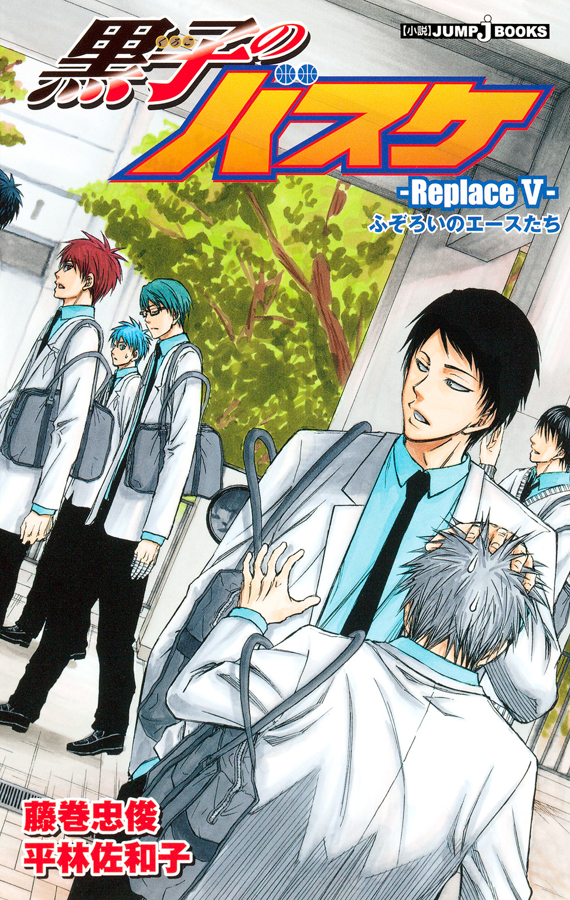
この本は縦書きでレイアウトされています。
また、ご覧になる機種により、表示の差が認められることがあります。
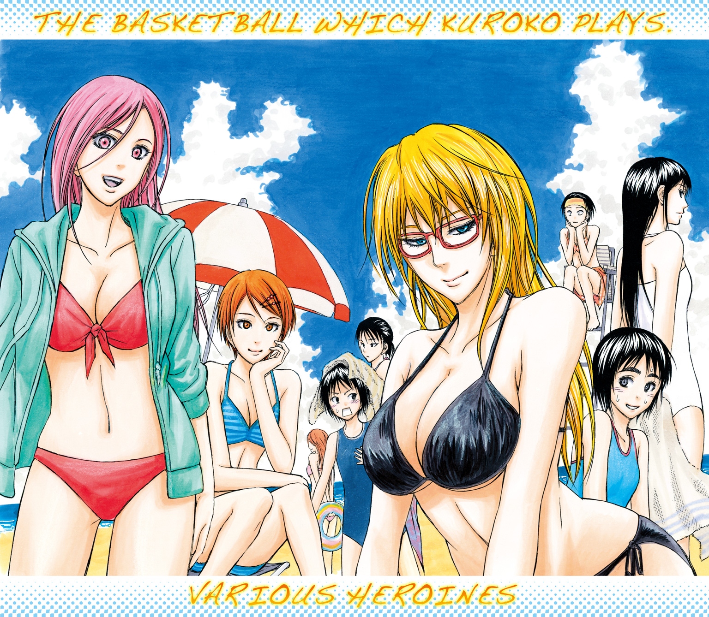
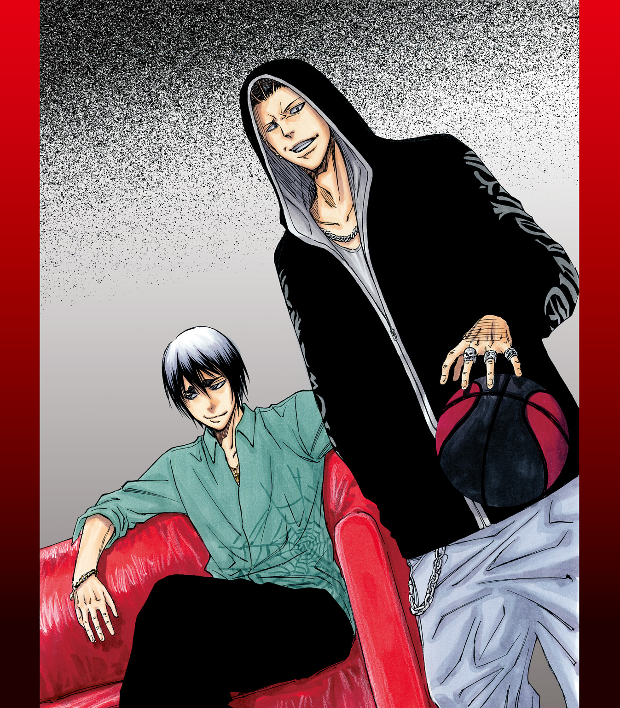
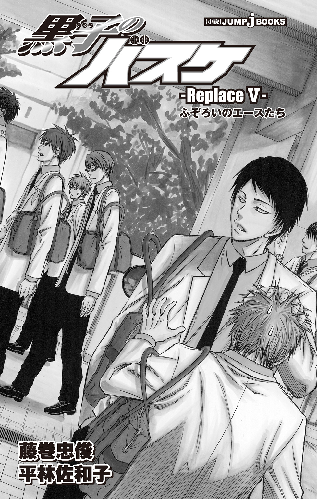
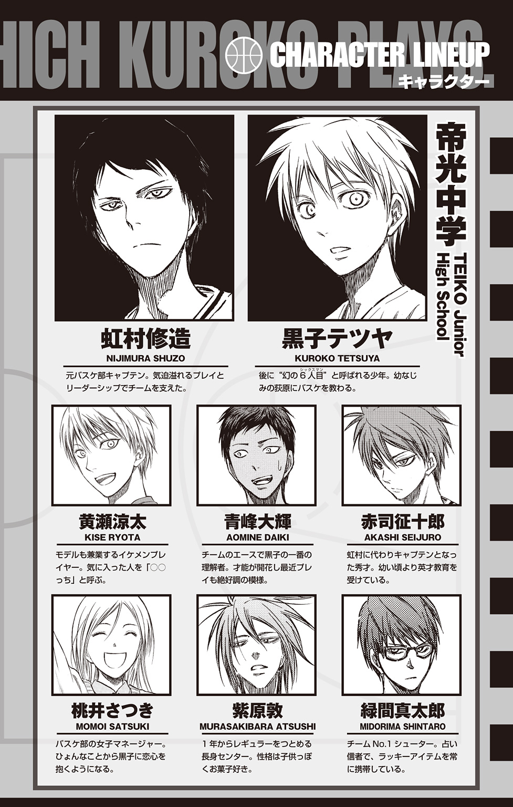
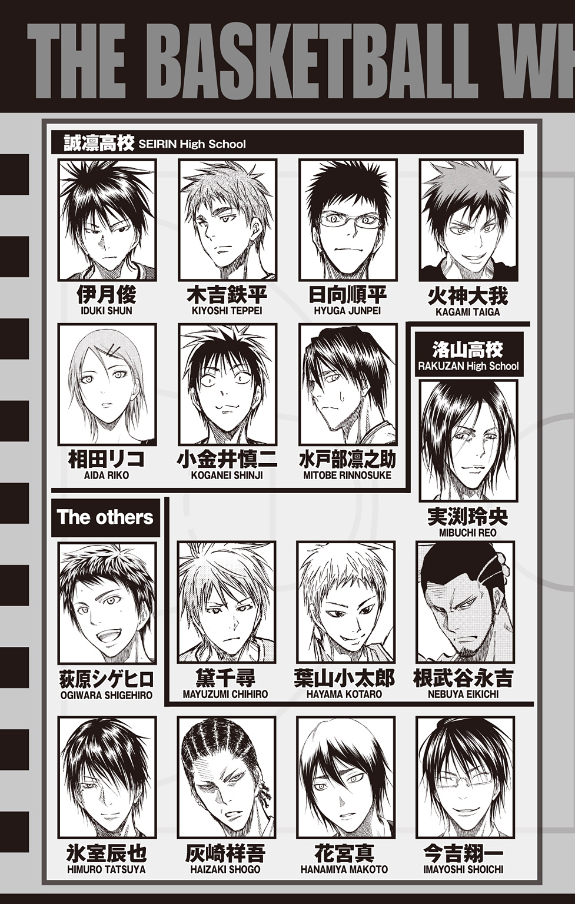
黒子のバスケ-Replace- ふぞろいのエースたち
Replace...バスケット用語で「元いた場所に再び戻ること」
★この作品はフィクションです。実在の人物・団体・事件などには、いっさい関係ありません。
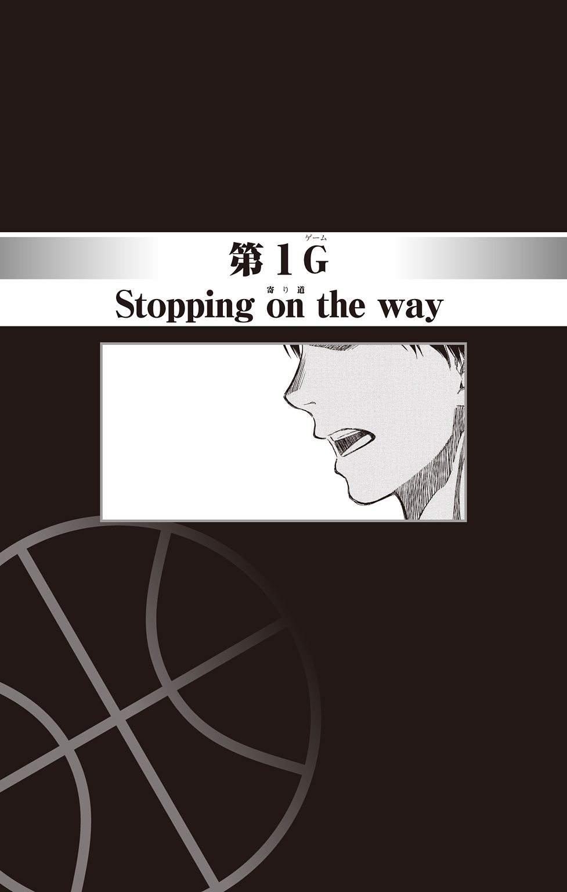
『地獄に仏』とはよく聞くが、その『仏』がこんな美形とは聞いたことがなかった。
初めて訪れた異国の地ロサンゼルスで、オレのピンチに手をさしのべた『仏』は、ちょっと目を瞠るほどの美形だった。
その証拠に、オレを取り囲み、早口の英語でなにやら怒鳴っていた男たちも、突然声をかけてきたそいつに目を奪われ、言葉を失っている。
一見してアジア系とわかる黒髪と、それにしては白い肌。おそらくオレと同じ、日本人だと思うが、その割にずいぶんと背が高い。オレも同年代の中では背が高いほうだが、そんな自分とさほど身長が変わらないから、おそらく百八十センチはあるはずだ。
体つきは細身だが、ひ弱さはなく全体的に引き締まっている。
なにより印象的なのが、その顔だ。
恐ろしく整っている。
小さな顔。すっきりした目鼻立ち。前髪を長く伸ばし、左目を隠すようにしているせいか、どこか神秘的で儚げだ。
そんな美形が、静かな笑みをたたえていれば、たいていのヤツは黙るしかないだろう。
（イケメンっぷりは黄瀨といい勝負かもな）
置かれている状況にもかかわらず、自分が直接知っている中で一番美形と言われていた男を思い出しながら、そいつを見つめた。
視線に気づいたのか、そいつはオレに一度笑いかけるとすぐに、オレを取り囲んでいた男たちに、なにやら英語で話しかけ始めた。
目の前で交わされる会話はもちろん英語だ。しかも速い。おかげで、相変わらずオレにはさっぱりわからない。それでも、第三者の介入にほっとしていると、そいつのジーンズの足に隠れるようにして立っている少年に気づいた。
「あ......マイク？」
オレが小さく名を呼ぶと、少年――マイクは、緊張した顔のまま、「もう大丈夫だから」とでも言うように頷いた。マイクがいるということは、やはりこの美形は、オレの味方と考えていいのだろう。
よく見れば、美形とマイクの後ろ、やや離れるようにしてマイクの友だち数人も固まって心配そうにこちらを見つめている。
いまだ事態は解決していないのだが、彼らの不安を少しは和らげたほうがいいだろうとオレも「大丈夫だよ」と頷いてみせた。
そのとき、出し抜けに男たちが動く気配があった。
はっと身構えた瞬間、やけに物騒な音が至近距離で聞こえる。
「......へ？」
反射的に顔をあげたオレは目を疑った。
だって、考えてもみてほしい。
まるで虫も殺さないように見えた優男が、二メートル近い大男を殴りつけていたなんて、いったい誰が想像できる？
オレは映画のスローモーションシーンを見るような気分で、倒れていく大男を眺めていた。
大男は完全に体を弛緩させ、バスケットコートに仰向けに横たわった。倒れた衝撃に筋肉で盛り上がった腕が一度大きく跳ねたが、完全に失神しているらしく、それ以上はぴくりとも動かない。
だが、それはオレたちも同じだ。
まったく予想外の展開に、オレも、オレを取り囲んでいた屈強な男たちも、言葉をなくし立ち尽くした。
さっき聞いた音は間違いなく、こいつが、この美形が、どう見てもアクション系というよりは、ラブストーリー系の俳優にしか見えないこの男が、大男を殴った音だ。
しかも音の響きからして、かなりの威力のはず。
（こいつ、何者なんだ!?）
オレは顔を強ばらせ、倒れた大男から美形の男、もとい凶悪系男子に視線を向けた。
目があった瞬間、凶悪系男子は倒れた男を乗り越え、素早くオレの腕をつかんだ。
「走るんだ！」
そいつは日本語で早口に言うと、腕をつかんだまま駆けだした。同時にマイクも、その友だちも走りだす。
バスケットコートを飛び出し、街路へ。
人混みをすり抜けるようにして、少しでも遠くへ遠くへと走る。
背後から、男たちの怒号が聞こえたような気がしたが、街中の人混みに紛れたオレたちにはよく聞こえなかった。
つかまれていた腕はいつのまにか解放され、男はオレの前方を走っている。その姿を見失わないように気をつけながら、オレはつくづく自分の不運を呪う。
ロサンゼルスに着いてから、まるで映画のような怒濤の展開が続いていた。
（さすがアメリカ......。自分だけは安全とか大丈夫とか、思ったら終わりだな......）
あらためて気を引きしめていると、前を走っていた男が、ちらりと振り向き、何か言った。
その声が聞き取りづらく、少し足を速めて男の隣に並ぶと、
「何か言ったか？」
と聞き直した。男はなぜかわずかに目を瞠り、ついで淡く微笑んだ。
「『足が速いんだな』と言ったんだ。オレのスピードに平気でついてくるから」
「ああ......。バスケやってたからな」
「そうなのか！ だからマイクと......」
男は嬉しそうに顔を輝かせ、納得したよと頷く。
そう言えば、マイクたちはこのスピードについてこられるのだろうか。気になり、振り返ってみると、後ろを走っていたはずのマイクたちの姿がなかった。
「あれ、マイクは......？」
「あらかじめ別の道で逃げるように言っておいたんだ。大人数で移動すると目につくからね」
男は走るスピードを緩め、オレの隣に並んだ。間近で見る美形はある種の迫力があるなと場違いなことを思っていると、男はすまなさそうに言った。
「マイクが誘ったせいで面倒をかけてしまったようだね。申し訳ない」
「いや、あれはオレのせいでもあるし。むしろ、あそこから逃げ出せて助かったわ。ありがとな」
できれば、もう少し穏便に抜け出したかったが、まあこれは贅沢な話だ。
「どこに行くんだ？」
勝手についてきてなんだが、一応聞いてみる。正直、オレ自身これからどうすべきか、どこに行けばいいのかわからない状態なので、日本語で相談できそうなこいつが頼みの綱だ。なので、逆に「どこまでついてくる気？」と聞き返されると困るな......と思いつつ、答えを待っていると、返事は意外なものだった。
「オレの師匠のところ。頼りになる人だから、安心して。マイクから少し聞いたけど、いろいろ困っているんだって？」
「ああ......かなりな」
オレが苦笑すると、そいつは安心させるかのように「順番に聞くよ」と微笑んだ。
「そう言えば、まだ名前言ってなかったよね」
男は氷室辰也と名乗った。
驚くべきことに、オレとタメで十五歳だという。
「うわ......十五で、その落ち着きは詐欺じゃねぇ？」
「そっちこそ、ずいぶん大人っぽく見えるよ。......虹村君」
教えたばかりの名前を氷室に呼ばれると、なぜかわからんがむしょうに照れた。君付けの呼び方に、互いの距離の取り方を探っているような感がある。
日本なら気にならないが、なぜかこの明るい空気が漂う街には似合わない気がした。
「呼び捨てでいいぜ。オレもタツヤって呼んでいいか？」
「わかった。じゃあ、シュウって呼ぶよ」
そしてオレ、虹村修造と氷室辰也はようやく同い年らしく、にっと笑いあった。
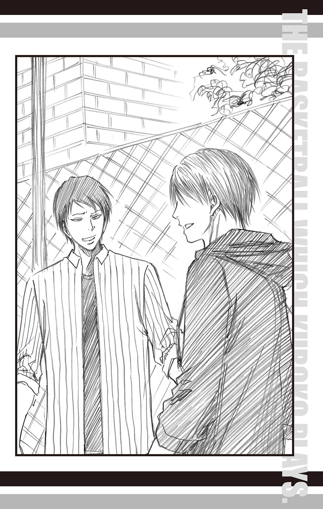
タツヤがオレを連れてきたのは、街中にある公共の体育館らしきところだ。
ロビーに入った時点で奥からバッシュのスキール音が聞こえた。ボールの弾む音とプレイをする者同士のかけ声も聞こえる。
「オレの師匠はクラブチームの先生をやってるんだ。いま、ちょうどそのクラブの練習中だから、少し待とう」
タツヤはロビーの隅にある階段へと向かう。オレも興味深く周囲を見回しながら、タツヤのあとに続いた。
二階にあがり、観覧席へと回ると、館内が一望できた。
「おぉ、すげーな。広ぇっ」
建物の大きさからして、かなり広そうだとは思っていたが、あらためて内部を見ると公共の体育館にしてはかなりの広さだ。天井も高い。
バスケコートが三面。その三面全部を使って子どもたちがバスケをしている。なんつー人数だ。オレがいた中学もバスケ部員の人数は多いほうだと思っていたが、さすがは本場。しかも、どいつもガキのくせしてうまい。
「あそこの真ん中に立ってるのが、俺の師匠だよ」
適当な席を求めて歩いていると、タツヤがコートの中心を指さした。
その先にいたのは、金髪の背の高い女。シュート練をする子どもたちを指導している。
「女の人が師匠なのか？」
「うん。アレックスは元プロの選手でね。すっごくうまいよ。あと、女と思って甘く見てるとすごく怖いんだ」
「へー......」
オレたちはコート全体が見える場所を選んで、並んで座った。
「はぁぁぁ......」
思わず口から、長いため息が漏れた。ようやく安心して座れる場所を見つけて、無意識に張りつめていた緊張が一気にほぐれたようだ。足が急に重くなったように感じる。疲れが出たのかもしれない。そりゃそうだ、さかのぼること半日前はエコノミークラスの座席に押しこまれていたのだから。
オレはもう一度、つとめて深いため息をついた。体をいたわるには深い呼吸が一番だ。
そんなオレを見て、タツヤが苦笑しながら言う。
「相当ハードだったようだね」
「否定できねぇな。めまぐるしいってのは、たぶんこういうことなんだってのを、実感したよ」
やれやれと背もたれに体重を預ける。
タツヤは何も言わない。どうやら、オレが話すのを待っているらしい。
さて、どこから話そうか。
オレはつい考えるときの癖で口を尖らせた。
やっぱりアメリカに来たところから始めるのが一番よさそうだ。
オレがロサンゼルスに着いたのは、今朝方のことだ。
渡航の理由は、観光でも家族の仕事の関係でもない。
親父の治療のためだ。
オレの親父は、二年前の春から病気で入院している。最初は順調に快復すると思われたが、入院中に別の病気を併発してしまい、医者に二度目の夏を迎えられるかどうかとまで言われてしまった。
家族は覚悟した。もちろんオレも。いつ病院に呼び出されてもいいように、悪いとは思いつつ、学校でも携帯の着信に神経を尖らせて過ごした。
だが親父は、奇跡的に二度の夏を乗り越えた。
けれどそれは快方に向かっているわけではなく、いまもって油断できる状況ではない。
そこでオレたちは、親父の病気に詳しい名医がこの街にいると知り、一縷の望みをかけて親父の容態と相談しながら渡米することにした。
親父と、そしてまだ幼い弟と妹は去年の十二月にこちらへ来ていたが、オレは中学を卒業してから追いかける形となった。
オレとしては学年途中の渡米もいっこうにかまわないと思っていたが、親父が頑として譲らなかったのだ。
「おまえは中学を卒業してから、来い」
病院のベッドの上でやつれた顔をしながらも、はっきりと言われてしまえば、従うほかない。
オレは親父の言いつけを守り、日本で中学を卒業した。その卒業式が昨日のことだ。
いや、時差の関係があるから、日付的にはまだ今日なのか？
ということは、挨拶に来た黒子や緑間たちの頭を卒業証書の筒でぽかぽか殴ったのは、そんなに前のことじゃないわけだ。なんだか、遠くに来ちまったせいか、ずいぶんと前の出来事に感じる。
ともかく、だ。そんな卒業式を終えて帰宅すると、オレはすぐに空港へと向かった。
大きな荷物は既に送ってあるから、荷物は小さなデイパックひとつだ。おかげで搭乗手続きも簡単に終わり、オレは飛行機に乗った。
フライトはおよそ十時間。浅い眠りを繰り返し、いい加減飽きてきた頃に飛行機は目的地であるロサンゼルス国際空港に着いた。
たどたどしく入国手続きをすませ、税関を通る。そこを抜けてしまえば、正式にアメリカだ。耳に入ってくる会話のほとんどが英語で、すれ違う人全員が違う国の人だった。
空港の磨かれた床を踏みしめながら、少しだけ誇らしさに浸る。
（やるじゃん、オレ）
ひとりでアメリカまで来てしまった。しかも苦手な飛行機でだ。
高所恐怖症というわけではなく、空を飛んでいるときの地に足がついていない感覚が昔からどうもダメなのだ。
おかげで、遠征で飛行機に乗ったときに「主将、緊張しすぎっスよ！ 顔がいつもの三倍怖いっス☆」と言われたりもしたが、今回はあの頃に比べてリラックスして乗れた気がする（ちなみに、その後輩は飛行機を降りたあとでちゃんと締めた）。
家族とは親父が入院する病院で落ち合う約束だ。携帯から「無事に着いた」とだけ親父にメールを打ち、オレは歩きだした。
病院へは、空港からバスの乗り継ぎが続く。
タクシーを使えばドアツードアだが、そんな贅沢はできないし、中学を卒業したばかりのガキがひとりでタクシーに乗るのは不用心だ。
空港まで迎えに行くと言っていた親父には、
『知らない街を地図を頼りに歩くのはすごくおもしろそうだから、いい』
という理由で断った。もちろん本心だが、そもそも親父のための渡米だ。オレのことまで気にかける必要はない。
オレは体をほぐすように軽く伸びをしたあとで、携帯を操作し、メモしたバスの行き先名とバスの特徴を確認すると、バス乗り場を探そうと空港を歩きだした。
不安はある。それに勝る期待もある。
ひとまずアメリカまでひとりで来られたのだ。自信もできた。なんとかなるだろう。
たとえどこかで立ち往生したとしても、『寄り道』はオレの十八番で、親父との約束でもある。
空港の窓から外を眺めた。まぶしいほどの光が溢れている。幸先はよさそうだ。
もちろん、現実は幸先などまったくよくはなかった。
オレの不運は、病院のある街に着いた時点で始まった。
「えっと次は......？」
バスを降り、携帯を片手に道順を確認し、どちらに行くべきかきょろきょろと周囲を見回す。おそらくそれがいけなかったんだと思う。
いかにも旅行者で、土地勘のない人間特有の行動。
「こっち......か？」
携帯から顔をあげ、歩きだそうとしたとき、いきなり後ろから来た人間に肩をぶつけられた。
「うわっ！」
突然のことにオレは手を滑らせて、携帯を落としてしまった。
「やべっ......！」
慌てて拾おうと身をかがめると、後ろからさらに背中を押された。
「おわっ！」
予想外の力に、オレはバランスをとろうと二、三歩踏み出す。意識が前方に向いた瞬間、なぜか左肩ががくっと横に引っぱられた。
「なにすんだ！」
伝わらないとは思っても、咄嗟に左を向いて日本語で怒鳴るが、次の瞬間、そんな状況じゃないことを理解する。
オレの視界に、全速力で走り去る男の姿が目に入ったのだ。そして、そいつが脇に抱えているのは、
「オレのデイパック!!」
すばやく携帯を拾い上げ、オレは窃盗犯のあとを追いかけた。
だが、全てはオレに分が悪すぎた。よく知っている所ならいざ知らず、建物が建ち並ぶ土地勘のない街で、全力疾走する相手を捕まえるのは至難の業だ。
それでも数分は追いかけられたが、いつのまにか犯人の姿を見失っていた。
おそらく窃盗の常習犯なのだろう。複数人による連携した犯行だった。
盗まれたデイパックの中には、財布もパスポートも全部入っている。
「くそっ、最悪じゃねぇか」
唯一手元に残された携帯を握りしめ、はっとした。
液晶画面が見事に割れている。画面も真っ暗。慌ててあらゆるボタンを押すが、まったく反応なし。間違いない。落としたときの衝撃で壊れた......！
「やべっ、どうする......！」
携帯があれば地図も見られるし、そのうち病院に着くだろうと完全にタカをくくっていたせいで、ここから病院までの道順は頭に入ってない。
いや、道順の前に――。
「......ここ、どこだ？」
目に映るのは閑静な住宅街。さすがアメリカ、どの家も庭が広い。
いや、そうじゃない。そんな感想、何の役にも立たねーよ。
いま重要なのはこっちだ。
――バスを降りたときとは明らかに景色が違う。
オレは呆然と立ち尽くした。
まずは交番と思ったが、これがまったく見つからない。
しかたなく、地元の人らしき主婦に話しかけ、病院の名前を告げて、そこに行きたいのだと英語で話しかけてみた。
オレのたどたどしい英語に何度か首をひねられたが、どうにか通じたらしく病院までの道を丁寧に教えてもらう。
丁寧さゆえか、道順の説明は一度に覚えきるにはだいぶ長かった。
「えー、あー、ゴー、ストレイ？ エンド、ターン ザ レフト？」
「No, turn right at the corner.」
散々聞き直したが、主婦は飽きることなく教えてくれた。アメリカ人、優しい......。
どうにか道順を覚え、親切な主婦に礼を言い、別れた。
壊れた携帯はジーンズの腰のポケットにしまい、歩きだす。
盗まれたパスポートのことも気になるが、いまジタバタしても、あまり意味はない気がする。
ひとまずは病院に行こう。あとはそれから考えればいい。
「まいったな......」
オレは小さくぼやき、四つ角で立ち止まる。歩き始めて優に三十分は経過している。
なのに、いっこうに病院らしきものが見えてこない。それなりに大きな総合病院だ。見落とすはずはない。
主婦が教えてくれた道順によれば、あとはまっすぐ歩くだけだ。だが、そう言われた道を、既に二十分は歩いている。
まだまだ遠いのか。それとも、教えてもらった道自体が間違っているのか。そもそも、オレが説明を理解しそこねていたのか。
（もう一度、誰かに聞くか......？）
周囲の景色は住宅街から、どこか閑散としたものに変わっていた。ぽつんぽつんと建つ小さな店は、かつてはアイスクリームとかを売っていたのだろうが、いまではどこもシャッターを降ろしている。それ以外は広々とした芝生の緑が目に優しい。どこまで行っても景色が変わらず不安になる。ときおり車が行き交う程度で、道を教えてくれそうな通行人は見あたらない。
と、思っていたのだが。
「Hi! Samurai!」
「......サム、ライ？」
なんで侍。いぶかしく思いながら声がしたほうに顔を向けると、オレが歩いていた歩道の先にフェンスに囲まれたバスケットコートがあることに気づく。そのコートのゴール下に、小学生らしき子どもたちが数名集まっていた。そのうちの一人が、こちらへと手を振っている。オレンジがかった髪が遠くからでもよく目立つ。地元の子か。
「Samuraaaai!」
少年はそう叫ぶと、人懐っこい顔でさらに大きく手を振ってきた。なんとなくつられて手をあげ返すと、少年はぱぁぁぁと顔を輝かせ、さらに手を振った。
「Sakura saku! Ninja muteki!」
桜、咲く。忍者、無敵......。
どうやら知っている日本語を立て続けに叫んでいるようだ。日本人を見たから、覚えた単語を披露したくてしょうがないってところか。
（ちょうどいい、あの子に聞こう）
オレは早足でバスケットコート内へと足を踏み入れた。
少年らは驚いた顔をしたが、オレンジ髪の少年だけはさらに顔を輝かせ、見せつけるように、手に持っていたバスケットボールを両手で掲げた。
「Basuke suki?」
「へ？」
少年は興味津々な様子でオレを見つめ、問いかけた。突然の質問にオレは面食らう。それまでの単語を並べただけの日本語とは違い、今度のはちゃんと文章になっている。
「Basuke suki?」
少年が繰り返す。
「....Yes.」
日本語で聞かれたのに、なんで英語で答えてんだ。
口に出したあとで自分で自分にツッコミを入れるが、全てはあとの祭り。
恥ずかしいなぁと思っていたが、少年はそんなことは気にならない様子で、満面の笑みを浮かべると、ボールを一度バウンドさせて、パスを出した。
ボールは逸れることもなく、オレへと飛んでくる。
いいパスだ。ブレがない。
条件反射的にボールをキャッチし、思わず触れ心地を確かめた。
指先で表面を撫でる。外で使って長いのか、こすれている。
「Hey!」
思わず感慨に浸りそうになったオレに、少年が声をかけた。
顔をあげると、少年はくいっとゴールを親指でさし、緩く走りだす。
一緒にプレイしろってことか。
オレはつい笑みをこぼし、ボールを軽くついた。
弾みが悪い。あまり空気が入っていないようだ。中学で使っていたボールは、マネージャーがつねに気配りをかかさず、いつも最良の状態を保っていたことを思い出す。
でも、いまはこれで充分。
オレは腰を低くし、ドリブルで走る。
少年の脇を抜けるとき、オレのスピードに彼が小さく口笛を吹くのが聞こえた。
試合中、息を飲まれたことはあったが、そんな反応をされたのは初めてだ。さすがアメリカ。ガキでもそんな仕草がサマになる。
オレはふっと笑うと、ゴール目指して大きくジャンプする。
無難にレイアップを決めようと思っていたが、視界の端で子どもたちの姿が目に留まった。
目を大きく見開いて、こっちを見てやがる。
（ちょっといいとこ見せるか）
ゴールへと伸ばしていた手を、すっと下げる。
少年が「え！」と驚いた顔をしたのがわかった。
まさに予想どおりの反応。オレは小さく笑うと、体を捻り、リングの逆側からシュートを決める――ダブルクラッチ。
ボールはきちんとゴールネットをくぐった。
「おっとと......」
コートに着地したところで、バランスが崩れた。慌てて手を回してどうにか尻餅は回避する。変にかっこつけようとすると、ボロが出る。
久々にやったが決まってよかった。あれで失敗したら、いい恥だ。
そんなことを思いながら、ボールを拾って振り返るのと、興奮した子どもたちがオレに次々にタックルしてきたのは、まさに同時で、結局オレはコートに尻餅をついた。
「いぃ!?」
突然のことに受け身もとれず、思いっきり打った腰の痛みに顔をしかめる。だが、子どもたちはそんなことはおかまいなしの様子で、
「Let's play together!」
「へ？ ......あ、え!?」
呆けるオレの手を引っぱり、三人がかりで力任せに立ち上がらせると、ぐいぐいとスリーポイントラインへと連れていき、 そのままワンオンワンの態勢に無理矢理立たされた。
（バスケをしてる場合じゃないんだけどな......）
しかし、それをどう伝えればいいのか迷っているうちにオレンジ髪の少年がパスをよこしてくる。それを反射的にキャッチし、条件反射的にパスを返してしまえば、あとはもう、自分の中に染みこんだ習慣に逆らえるはずもなく。
ついついオレは時間を忘れて、久しぶりのバスケの感触に浸った。
オレンジ髪の少年は名前をマイクといった。ファミリーネームも教えてくれたのだが、オレには発音が難しく、結局彼が「マイクでいいよ」と笑うので、覚えるのは諦めた。
ちなみに名前を教えてもらったのは、一通りバスケをしてマイクたちの興奮が落ち着いてからで、そこでようやくオレ自身の状況――荷物を盗まれて困っていること、病院に行きたいことを伝えることができた。
だが、伝えるには伝えたのだが、どうも正確にわかってもらえた気がしない。話している最中、マイクも他の子らもきょとんとするばかりだった。それでも、困っているということはどうにか伝わったようだ。
マイクは「I see.」と頷くと、ひとつ提案してくれた。
ボクの友人に日本人がいる。その彼がもうすぐ学校から帰ってくる時間だから、その彼に相談してみてはどうか、というのだ。
願ってもないことだ。もはやオレの英語レベルでは解決しない気がする。
「Are you O.K.?」
「イエス。サンキュー」
「ドウイタマシテ」
なぜかオレが英語で返し、マイクが不思議な日本語で返すというちぐはぐな会話に、オレたちは顔を見合わせて、笑った。
話が決まれば、マイクの行動は早かった。ボールを持ち上げ、もう一度プレイしようと誘ってきた。他の子らもわっと喜んではしゃぎだす。マイクの友人の学校が終わるまで、まだ時間があるそうだし、久しぶりのボールの感触はオレを頷かせるには充分だった。
子どもたちと順番にワンオンワンを繰り返し、せがまれてもう一度ダブルクラッチも披露してみせる。「One more!」と言われ、今度はダンクを見せると、さらに興奮して跳び上がり、拍手までもらってしまった。
そのあまりの喜びように、おもわず顔がほころぶ。
もしここに青峰がいて、あいつのスーパープレイを見せたら、むちゃくちゃ喜んで大騒ぎになりそうだ。
（......あいつ、大丈夫かな）
最後に青峰を見かけたのは、いつだったろうか。正確には覚えてないが、それでもどことなく塞いだ表情をしていた気がする。去年の夏に部を引退したあとは、現役メンバーの意志を尊重しようと関わらないようにしていたが、噂ではあいつの好調ゆえの不調を聞いていた。
そんなことに思いを巡らせていたときだ。
オレたちに声をかけてきたヤツらがいた。
「Hey! You're a real good player!」
コートにズカズカと入ってきたのは三人の男。一人はオレより背丈があり、おそらく二メートル近いんじゃないだろうか。体格もいい。Ｔシャツの上にジャケットを着ているが、その肩は筋肉で大きく盛り上がっている。もう一人は、背丈はオレと同じぐらい。キャップ帽を後ろ向きにかぶり、大きなサングラスをかけている。最後の一人は、オレより背は低いが、横幅がすごい。左右前後に体が膨らんでいるので、まるで風船のようだ。しかもモヒカンの頭を真上からのぞけるという、初めての体験をさせてくれた。三人とも、おそらくオレよりは年上だろう。
そいつらは口元に笑みを浮かべてオレとマイクを取り囲むように立った。明らかに友好的な雰囲気ではなさそうだ。彼らはなにやら早口で話しながら、やけに距離を詰めてくる。早口すぎて何も理解できない。それでも、マイクが顔を強ばらせ、オレの足にしがみついてくるので、オレたちにとってやはりよくない内容なんだろう。
ひとまず、この場から逃げ出すべきかと思った矢先、オレの視線は一点に集中してしまった。
（胸毛すげぇ！）
ちょうど目線の高さに来た背の高い男のＴシャツの胸元から、胸毛がもじゃっと顔を出していたのだ。この状況でそんなところに目がいってしまった自分がおかしくて、オレは思わず口元を緩ませた。
どうやら、それがいけなかったようだ。
「So, it's a deal!（交渉成立だな！）」
「へ？ あ、え？」
背の高い男が満足げに笑い、バシンッとオレの背を叩く。その痛みに一瞬息が止まり、なにするんだと男を睨みつけた。
しかし男はニヤリと笑うと、オレから離れていく。あわせて、他の二人もコートの外へ歩いていく。
（なんだ？ 単に話したかっただけか？）
ほっとするオレの手をマイクがぐいぐいと引っぱった。
「よかったな、マイク」
「シュウ、キケンダヨ!?」
「なにが？」
「You shouldn't make a bet on a basketball game with these kinds of guys. It's so dangerous!（賭けバスケなんて危ないよ！）」
〝make a bet〟――聞いたことのない言葉を理解するまで、オレは時間を要した。
そしてようやく理解できたとき、まず一番に見えたのは、スリーポイントラインで待つ背の高い大男で、次にコート外でニヤニヤしながら観戦する体の他の男二人だ。
まず間違いなく、オレ自身が賭けバスケの対象であり、それを申しこまれた本人だ。
（なんでオレが!?）
冗談じゃない。賭け勝負もたまったもんじゃないが、そもそも持ち金がゼロなのだ。そんなことに巻きこまれては困る。
ヤツらとしては、さっきオレが笑ったのを「了解」ととったらしいのだが、こっちは胸毛で笑っただけだ。しかし、その誤解をどう解けばいい？
（胸毛って英語でなんて言うんだ？ ......バストヘア？ んなわけあるか!!）
悶々と悩み、あーとうーを繰り返しているうちに、男たちの顔色が徐々に変わり始める。
「Let's get started!（早く、始めるぞ！）」
苛ついた声で怒鳴られ、マイクは「ヒッ」と小さく悲鳴を漏らした。他の子たちも怯えた様子で遠巻きにこちらを見守っている。
おそらく、最初からこれを狙っていたに違いない。
英語に不自由そうな外国人に声をかけ、賭けバスケをもちかける。わけもわからないうちに、バスケをすることにしてしまい、断れば何かしら理由をつけて金をまきあげ、バスケをするとなればなったで、勝って金をまきあげるつもりなのだ。
となれば、やることは決まっている。
（まさか、こんなことになるとはな......）
オレはため息をひとつついて、スリーポイントラインへと向かった。
「それで、勝っちゃったんだ？」
オレの話を静かに聞いていたタツヤが楽しそうに目を細めて、尋ねた。
「まあな......。だって他に方法がないだろ？」
オレは観覧席のベンチにもたれたままタツヤに尋ね返す。
ヤツは穏やかな笑顔で同意するように頷いた。
「たしかにそうだね。お金がないなら、そうするしかない。けど、それじゃ穏便にすまされなかったわけだ」
そうなのだ。
ワンオンワンに勝てば諦めてくれるだろうという予想は甘かった。
一回目の勝利の際は、「One more!」とニヤついて言われ、二回目の勝利には「One more!」と睨みつけられ、三回目のときには、なにやら早口でまくしたてながら、襟首をとられそうになり、かろうじて避けた。
状況的に、因縁をつけられているのだろうな、と早口の英語に辟易していたところに現れたのが、タツヤだ。
「おまえが来たとき、これで穏便におさまると思ったのに、まさか殴るとはな......」
ベンチの肘置きに肘をつき、頰杖をついてタツヤを見上げると、この凶悪系男子は困ったような笑みを浮かべた。
「知らない相手だったし、オレも穏便にすませるつもりだったんだけどね。あっちが先に実力行使に訴えたから、しかたなく応戦させてもらったよ」
「しかたなくね......。あんた、ケンカ慣れしてるだろ」
「どうかな。そうでもないと思うよ」
涼しい顔で答えてやがるが、間違いなく噓だろう。そうでなければ、あの大男を一発で沈めるなんて不可能だ。
オレが胡乱な目で見ていることに気づいたのだろう。タツヤはにこりと微笑むと、「病院のことだけど」と話題を変えた。
「その病院の場所なら、わかるよ」
「ほんとか!?」
オレはぱっと姿勢を起こし、タツヤに向き直る。タツヤは頷いた。
「行ったことはないけど、名前は知ってる。ここからだと、少し距離があるから車で送るよ」
「いいのか!? 助かる！」
これで確実に病院には着ける。ようやく具体的な光明がさした。
タツヤの師匠が車を持っているので、彼女に頼むという。というわけで、やはりオレたちはクラブが終わるまで待つことになった。
「先に親御さんに連絡するかい？ 心配してるんじゃないかな」
タツヤが自分の携帯電話を差し出した。「ありがとな」と言ってそれに手を伸ばして、はたと気づく。親の携帯の番号がわからない。
「シュウは意外と抜けてるね」
「返す言葉もねぇな。でも、まぁ、平気だろ。うちは『寄り道』には寛容なんだ」
口の端をあげて笑ってみせると、タツヤは不思議そうに首をかしげた。
「寄り道に寛容って？」
「オレは昔から『寄り道』が多いヤツでさ。ンなもんだから、あるとき言われたんだ」
片手で筒の形を作ると、中をのぞきこむように目元に近づける。
「『寄り道するなら、きちんと周りの景色を見てこい』って」
そのままタツヤに顔を向けると、のぞいた筒の先でヤツはくすりと笑う。
「それ、誰に言われたの？」
「オレの親父」
「おもしろいお父さんだね」
「かもしれねぇな。まさか、アメリカ最初の寄り道が、ひったくりと迷子のダブルパンチとは思わなかったけどな」
「ダブルどころか、賭けバスケもだろ？ 普通の親御さんが聞いたら卒倒するよ」
「だよなー......」
しかたない。到着が遅れた理由を聞かれたら、迷子になったことだけ伝えよう。
そのとき、体育館内にホイッスルの音が鳴り響いた。
観覧席からバスケコートを見下ろすと、これからゲームをするようだ。
はしゃぐ子どもたちの顔を眺めながら、オレはふと思いついたことを尋ねた。
「マイクもここの生徒なのか？」
「うん。あの子は別の曜日に来てる」
タツヤが言うには、ここのバスケクラブは月と木、火と金、水と土の三教室あるという。
この人数がさらにあと二クラス分もあるのかよ。
あらためて、アメリカのバスケ人口の裾野の広さを思い知る。
「あんたもここで教わってるのか？」
「いや。時々教えるのを手伝ってはいるけど。オレの場合、バスケのスタートは独学なんだ。あとは個人的にアレックスに師事して、いまはストリートがオレの学び場だよ」
「へー......」
オレは思わず目を細めた。
元プロ選手仕込みの同い年。否が応にも、興味は湧く。
「なぁ、ちょっと対戦してみないか？ オレも少しはバスケには自信あるんだ」
オレの誘いに、タツヤは迷うことなく頷いた。
屋外にもバスケコートがあるというので、オレはタツヤの後ろについて、体育館を出る。
建物の裏へと向かおうとすると、背後で慌ただしい足音が聞こえた。
何気なく振り返ると、オレとさっきまで一緒に遊んでいた子どもたちだった。
彼らはどこか焦ったようにロビーの扉を開けて、入っていこうとする。
「別の場所に逃げるように伝えたんだけどな......」
タツヤは不思議そうに呟くと、「Hey!」と声をかけ、手を振った。
子どもたちはびくっと肩を震わせて足を止めた。そして、タツヤの顔を認めると、安堵と焦りとをごちゃ混ぜにした顔でこちらへと猛ダッシュで駆けてくる。
彼らは、タツヤを取り囲むと、口々に何か言い始めた。もちろんオレには何を話しているかはさっぱりわからない。それでも、何かまずいことが起きたということは、彼らの表情と、徐々に険しくなっていくタツヤの表情からうかがい知れた。
（何が起きたんだ？）
見守るしかないオレだが、ふいにあることに気づいた。
子どもたちの中にマイクの姿がない。
（いや、まさかな......）
頭に浮かんだ嫌な予感を否定した矢先、ずっと聞き役に徹していたタツヤが口を開いた。
穏やかに話すタツヤの様子に、子どもたちも徐々に落ち着きを取り戻し始める。
「Understand?」
タツヤの言葉の中に、聞き覚えのある言葉が出てきて「おお、オレにもわかる単語があったわ」と思っていたら、どうやらそれが締めの言葉だったらしく、子どもたちは頷き、タツヤを気にするように何度も振り返りながら、去っていった。
そこでようやく、タツヤがオレに振り返った。
ヤツの顔を見て、オレは息を飲む。
子どもたちの前では抑えていたのだろう。オレに向きあったタツヤの顔からは穏やかさは消え、能面のように顔色を失いながらも、眼光だけは冷え冷えと怒りに揺れていた。
顔のつくりがキレイなヤツだ。冷たく凍えるような怒気をたたえると、ことさら迫力がある。
「何があった？」
尋ねるオレの声にも自然と緊張が混じる。
「............マイクが捕まった」
告げたタツヤの声は冷たく、その内容にオレはまたも息を飲んだ。
「マイクを捕まえたのは、さっき絡んできた男たちだ」
「なっ!?」
脳裏に胸毛の大男と、キャップ帽と、モヒカンのチビの姿が蘇る。
あいつらがマイクを捕まえた？
「タツヤに殴られた腹いせにマイクを捕まえたってことか!? んだよ、それっ......！ 八つ当たりもいいところじゃねぇか！」
「そういう理屈で動く連中もいる。あいつらがそうだっただけだ」
タツヤは淡々と続けた。「マイクを渡してほしければ、オレとシュウに謝りに来いと言っているそうだ」
先ほどの子どもたちは、ヤツらのメッセージを伝えるために解放されたというわけか。
「謝るっていっても、それだけじゃ許してくれなさそうだな」
「まあ、そうだろうね。行けば、明日は起き上がれないような体になるのは間違いない」
怖いことをあっさりと言う。その声に、怒りだけではなく、冷静さと、同時に高揚が含まれ始めていた。だが、それはオレも同じだ。
「どうするんだ？」
なんとなく答えは予想しつつ、オレは尋ねた。
タツヤの眼差しは冷え冷えとしたままだ。その目で、オレをまっすぐに見つめる。ヤツは口元を緩めると、言った。
「もちろん行くよ。マイクを無事に助け出して、ヤツらにいかに自分たちが愚かなのかを教えてあげないといけない」
ああ、こいつとは馬が合うな。
オレは声もなく口の端をあげた。
夕暮れが近くなった街を、オレとタツヤは駆け抜ける。向かっている先は、ヤツらが指定した場所だ。
もちろん、そこにマイクが監禁されているとは限らない。おびき寄せる場所は別というのは、よくある手だ。
それでも時間が限られているいま、相手が指定した場所を一度は見ておきたいというのがタツヤの言い分だった。
制限時間は一時間だという。
それがヤツらが指定した時間であり、タツヤにとっても限界らしい。
何が限界なんだ、と尋ねると、一時間後にバスケのクラブが終わるからと答えが返ってきた。
タツヤの師匠には念のため事情をメールにしたためて送信しておくので、一時間後、それを見た彼女がタツヤを探しにくるだろうから、それを保険にするというのだ。
「もちろん、一時間以内にことを終えて戻ってくれば、アレックスに叱られるだけですむから、オレとしてはそちらを目標にがんばりたいね」
こともなげに目標を掲げるタツヤだが、言ってる内容は『大人が介入する前に、あいつらを締め上げる。絶対に』ということである。ちなみに後半の『絶対に』はオレの率直な意見でもある。
「で、マイクの居場所はどこか、心当たりはあるのか？」
「ない」
「おいっ」
あっさりと答えるタツヤに、思わずツッコまずにはいられない。
だがタツヤは焦った様子もなく、「宛てがないなら、別の角度から攻めてみればいい」と、走りながら携帯を操作して誰かに電話をかける。
二度コール音が鳴ったところで、相手が出た。
「Hi, it is Tatsuya. Is it John?」
走るのをやめ、早歩きしながらタツヤは電話の相手に何かを話している。
今回のことを説明しているのか、ずっと一方的に話していたが、やがて、電話口の向こうから漏れ聞こえる声が荒くなったようだった。なんだ？ 怒ってるのか？
タツヤは電話を切ると、「行こう」とまた駆けだした。
「電話、なんだったんだ？」
「友だち。一緒にストリートバスケをしてる仲間だ」
聞けば、オレがマイクとバスケをしたコートは、タツヤたちにとって、とても大事な場所らしい。そのコートの使用権を巡って、毎週試合をして決めるほど、人気のあるコートなのだそうだ。
ただ、空いているのであれば、小さい子たち限定で使用してもいいというのがバスケ仲間の暗黙のルールになっていた。
だというのに、無断でコートに入って賭けバスケをしたうえ、子どもを盾にタツヤを脅している、という事態に、仲間は激怒したそうだ。
なので、あの胸毛野郎がどこを拠点にしているのか、行きつけの場所があるのか調べてくれるという。
「調べられるのか？ あいつらのこと、全然知らないんだろ？」
「蛇の道は蛇だよ。賭けバスケをするようなヤツらなら、バスケに自信があるだろうし、バスケ仲間からあたりを入れられる。逆に、賭け事や強請に重心を置いているのなら、そっちのネットワークにも手を回してもらう」
意外とそっちのネットワークのほうが信用できるんだよね、とタツヤは付け足した。
どういう意味だと聞き返すと、
「お金が絡むと、自然ときな臭い連中が集まるんだ。賭けバスケだって例外じゃない。そこで生じるトラブルをおさめて、うまい汁を吸うヤツがいる。そっち系専門の人たちはネットワークと上下関係がしっかりしてるから、目的の人物はあぶり出しやすいんだよ」
途方もない内容に、オレは頭の中が白くなりかけた。それってつまり、ちょっとブラックな方々とつきあいがあるってことじゃないのか。
「タツヤ......おまえ、本当に同い年か？」
「年齢詐称してオレに得があると思う？」
「ないな。全然ないな。けどよ、同い年が話す内容か、それ......。つーか、お前も賭けバスケやってたのか!?」
「オレはあまり。ただアレックスが......オレの師匠が賭けバスケに凝っていたときがあって、それにくっついていったら、周囲の大人たちと仲良くなったんだよ」
絶句するしかない。だが、こういうギャップは前にも味わったことがある。
（そうか、赤司と話したときもこんなだった）
一つ年下のあの後輩は、何かにつけ大人顔負けのことをやってのけ、幾度となくオレを驚かせた。
だが、さすがの赤司もブラックな人間にツテはないだろう。
（いや、甘いな。あいつはそれぐらいどうにかしそうだ。なにせ、『赤司様』だし）
マネージャーたちにそう呼ばれていると知ったときは大笑いしたが、それを知ったあいつが、「そうですか」と淡々と受け止めたときはさらに大笑いした。
そしてつくづく、同じ場所に集まった者でも、いろんな人間がいることを思い知ったのだ。
「シュウ？」
「え、あ、なんだ？」
つい思い出に浸っていたらしい。タツヤの呼びかけにはっと顔を向けると、
「顔、ニヤけてる」
呆れ顔で言われてしまった。
「うお！ 悪ぃ......！」
これからマイクを助けに行くってのに、不謹慎すぎる。反省するオレに、タツヤはにこりと笑った。
「思い出し笑いって、むっつりな証拠らしいね」
「なっ！ なに言ってんだ、おまえ！」
「こういう会話って、同い年っぽくないかい？」
......根に持ってたのか。
絶句するオレの前で、タツヤの携帯が鳴る。電話に出たヤツは、すっと顔を引きしめて別人のようだ。
いろんな人間がいる。オレはつくづく『寄り道』の大切さを嚙みしめた。
目的の倉庫はうらぶれた倉庫街の中にあった。使われなくなって久しい煉瓦造りの倉庫が中央の通りを挟んで左右に六棟ずつ建ち並んでいる。倉庫には通しナンバーが振られ、左手前が〝１〟、その隣が〝２〟と順に増えていき、右手奥の倉庫が〝12〟だ。
「あの中のどこかにマイクがいるのか」
建物の陰から、倉庫街の入り口を遠目に見つめてタツヤが言う。
「情報を信じるなら、そうだろうな」
タツヤの仲間たちによる調査のおかげで、胸毛野郎たちの身元はおおよそ把握できていた。
バスケ愛好家ではなく、賭けや強請に軸足を置いている連中のようで、おかげでそちらのネットワークから情報を得ることができたのだ。
拠点にしているのは、この倉庫街のみ。しかもここを拠点にし始めたのも、つい最近だという。
（ということは、力をつけ始めてまだ時間が浅いってことか）
だからこそ、些細なプライドを傷つけた相手も許せないのかもしれない。この時期に周囲に甘く見られると、格が落ちると考えているのだろう。
そこにつけいる隙があるかもなと考えていると、「あっ」と小さくタツヤが声を漏らす。
見れば、〝３〟の倉庫から人影が現れた。
見たことのない男二人組だ。
年齢は胸毛野郎たちよりは年下に思える。派手なシャツを着て、なぜかズボンは迷彩柄だ。二人はドア前の三段ほどの階段に座り、余裕の様子でタバコを吹かし始めた。
「あそこか......。二人ぐらいなら、すぐに黙らせられる」
タツヤが颯爽と出ていこうとするので、オレは「はやるなって」と服の裾を引っぱった。
「倒す気満々なのはいいけど、ここまで来て正攻法でいく必要もねぇだろ」
「でも、マイクをあまり待たせたくない」
タツヤは〝３〟の倉庫を見遣った。重たい遮光カーテンを閉めているせいで、倉庫の窓から中をうかがい知ることはできない。
「そりゃそうだが、少しこっちの準備をしてからでも遅くはないさ」
オレに任せてくれ。そう言うと、ヤツは少し驚いた顔をして、頷いた。
倉庫街の入り口には見張りが立っているので、その場を離れ、大きく迂回して裏へと回る。
壁を乗り越えて敷地へと入り、人目につかないように倉庫の陰に隠れて進みながら、〝１〟の倉庫へと戻ってきた。途中、倉庫と倉庫の隙間から派手シャツの監視役に見つかるかと思ったが、幸いにも背の高い雑草が自生していたので、楽に身を隠すことができた。
耳をすまし、中に人の気配がないことを確かめると〝１〟の倉庫へ裏窓から侵入する。
中は倉庫というよりも、作業用のガレージのようだった。
コンクリート打ちっぱなしの床の上に、椅子やテーブルが無造作に置かれていた。
侵入した際に開け放った裏窓から夕焼けが差しこみ、室内に影がくっきり浮かび上がる。周囲を見回しながらタツヤが呟いた。
「何かの事務所だったのかな......」
「だろうな。読みどおりで助かったぜ」
室内を見渡し、目的のものを見つけたオレは、まっすぐにそこへと向かう。後ろからタツヤがついてきた。
「読みどおりって？」
「こいつを見つけておきたかったんだ」
オレは目的のものの前で止まると、その金属製の扉を叩いた。コンコンと音が鳴る。
「それって......何の扉なんだい？」
「配電盤さ」
話しながら、オレはその扉を開ける。キィと小さく悲鳴をあげて、扉は簡単に開いた。
「日本だとこういう倉庫街はたいてい事務所に倉庫全体の配電盤があるんだよ。一緒でよかった」
整然と並ぶ、ブレーカーのスイッチ。どれにも小さな字で説明が刻まれている。英語だが、ありがたいことに一から十二までの数字が各所に振られているので、だいたいどれがどの倉庫に電力を供給しているスイッチかがわかった。
ほとんどのスイッチはオフにされていたが、三番と十二番のスイッチだけはオンにされていた。
「三番はさっき監視役がいたとこか。てことは、本命は十二番だな」
「マイクは十二番の倉庫にいるんだね？」
「おそらくそうだろうな。オレたちを呼び出して、三番の倉庫に連れこみ、大人数でフルボッコにしようって計画だろう」
やだねぇ、野蛮で。
独り言のように呟いて笑うと、タツヤがじっとオレを見つめていることに気づいた。
「なんだ？」
「シュウ、ずいぶん手慣れてるね」
タツヤの目に疑いの色を感じ、オレは先回りして否定する。
「言っとくが、泥棒してた過去とかないからな」
「じゃあ、どこで？」
「............」
つい言い淀んでしまったせいで、タツヤの疑いを深めてしまったようだ。いぶかしむ色が濃くなっている。
（んー、どうしたもんかな）
こういうことに手慣れてしまった本当の理由を説明するのは、やはり躊躇われる。少々......いや、かなり恥ずかしい理由だからだ。
しかたなく、オレはこう答えるにとどめた。
「まぁ、なんというか......オレは『寄り道』が多いヤツだったからさ」
〝１〟の倉庫をタツヤに任せ、またも倉庫の陰に隠れながら、今度は〝12〟の倉庫へ向かう。
時計を見れば、胸毛野郎の言った制限時刻まで残り二十分。おそらくヤツらもイライラが始まる頃だろう。イライラしたまま〝３〟に集まってくれれば助かるんだが、こればかりは何とも言えない。
〝12〟の倉庫の裏窓の下で耳をすます。
かすかだが、人の話し声が聞こえた。何人いるかはわからない。だが、超満員というわけではなさそうだ。
もう一度、時計を見る。タツヤと決めた時刻まで、あと五秒、四秒、三、二、......一！
ズゥン！
一瞬、圧迫感が消えるような感触を味わうが、これはきっと気のせいだ。いま起きたのはそういうたぐいのものではない。でも、中にいた連中にとっては、充分混乱する出来事だったのだろう。なにしろ、突然電気が消えたのだから。倉庫内からは戸惑いの声と苛ついた声が聞こえた。
やや遠くでも、ざわつく声が聞こえるから、〝３〟の倉庫でも無事に同じ現象が起きたようだ。
入り口の扉が開く気配がした。いまだ。
オレは、あらかじめ窓の下に積んでおいたブロックを登り、〝１〟の倉庫から拝借してきたカーテンをかぶると、体当たりで窓を割って侵入した。
「What!?」
暗い室内で男が一人、こちらを振り向いた。まぶしそうに目を細めている。
そりゃそうだ。タツヤがブレーカーを落としたせいで室内は真っ暗だったのだ。そこにいきなり外の光が差せば、目に痛いに決まっている。
その隙が命取りになる。
叫ばれる前に黙らせようと男に走る。だが、その前に男の背後に忍び寄ったのは、
「おまえ、速すぎだろ!?」
〝１〟の倉庫にいたはずのタツヤだった。
（マジかよ！ いくら足に自信があるっていっても、速すぎだっつーの！ しかも腕っぷしが強すぎ！）
入り口が開いた気配があったから、おそらく一人は入り口から外へ出たはずだ。その男を仕留め、さらにタツヤは中にいる一人へと迫っている。
（どれだけケンカ慣れしてんだよ......）
一瞬で意識を飛ばされ、床に倒れ伏した男を見下ろし、オレはおやと首をかしげた。
なぜだかその背中に見覚えがある。でも、こいつはあの胸毛野郎でも、帽子野郎でも、ましてやモヒカン野郎でもない。
誰だっけ......と記憶を辿り、はっとする。こいつ、オレからパスポートを奪ったひったくりじゃねぇか！
もしかしてと周囲を見回すと、テーブルの上にオレのパスポートがあった。
咄嗟にデイパックを探したくなるが、いまはこんなことをやっている場合ではない。
「Mike?」
「I'm here!」
タツヤの呼びかけに応える声があった。
声の主は倉庫を支える支柱のひとつに縛りつけられていた。
拘束を解いてやると、マイクはタツヤに抱きついた。顔をタツヤの腹にうずめ、背中に回した手はＴシャツを皺になるほど引っぱっている。
その手が、震えていた。
タツヤはマイクを大事そうにしっかりと抱きしめる。マイクは声もなく泣き続けた。
その姿に、頭の奥が熱くなる。
なぜか手も痛い。ガラスで切ったかと見てみれば、爪あとが残るほど拳を握りしめていた。完全に無意識だった。
「シュウ！」
「っ！」
咄嗟に反応できたのは、偶然としか言いようがない。
タツヤの声に反射的に飛び退くと同時に、一瞬前まで頭があった場所を鉄パイプがフルスイングで通過した。
飛び退き、タツヤとマイクをかばうように立つ。いつのまにか開け放たれていた入り口から男たちが入ってきていた。
鉄パイプを振ったのは、昼間の胸毛野郎だった。
「Boy, you've come to the wrong place....（来る場所を間違えてないか？）」
鉄パイプを肩に担ぎ、胸毛野郎が何か言った。おおかた、「よく来たな」ぐらい言っているのだろうなと適当にあたりをつける。
「マイクは返してもらうぜ」
日本語で言っても通じないだろうなと思いつつ、一応言ってみる。
「What?」
おもいっきり鼻で笑われた。ますます頭の奥が熱くなる。
男たちはざくりざくりと地面を踏みしめるように倉庫の中へ入ってくる。
数は、十一、十二......十六人か。
その中には、キャップ帽の男も、モヒカン野郎もいた。十六人がぞろりとオレたちを取り囲む。素手のヤツもいるが、たいていが何かしらの武器を持っていた。
「シュウ。マイクを頼む」
「え？」
タツヤは自分を抱きしめているマイクの腕を優しく外すと、そっとオレのほうへマイクを押しやった。オレが慌ててマイクの肩を抱いた瞬間。
タツヤは走った。
「っ!?」
驚くオレの前を抜け、入り口前に立つ胸毛野郎へと肉薄すると、左足で踏みきり、右足を大きく振り回して――。
ゴキッ！
タツヤの回し蹴りが胸毛野郎の頭に決まった。口から泡を吹き、胸毛野郎がゆっくりと倒れていく。
「なっ!?」
まさに電光石火の早業に一同が目をむく。その中、本人だけが冷静に叫んだ。
「シュウ、外へ！」
「お、おう！」
オレはマイクの手を引き、倒れた胸毛野郎を踏み越えて外へ出た。
「ともかく逃げるんだ！」
タツヤに言われるままに、倉庫街の出口目指して走ろうとしたそのとき、緊張と恐怖が極限に達したのだろう。マイクが足をもつれさせ、転倒した。
「おわっ！」
手を繫いでいたせいで、倒れたマイクに引っぱられ、オレもバランスを崩す。
だが、どうにか倒れこむのは防ぎ、慌ててマイクの側へ身を屈める。
「立てるか、マイ......!?」
言葉は最後まで続かなかった。追ってきた男が、飛び蹴りをしてきたのだ。
咄嗟に顔の前で十字に腕を交差させ防いだが、火傷のような痛みが腕に走り、勢いを殺しきれずオレは後ろに大きく倒れた。
「シュウ！」
タツヤの声が聞こえる。倒れた拍子に地面でこすったせいで、背中に痛みが走った。
熱い痛みに、目を閉じそうになるが、一緒に倒れた男がニヤリと笑ったのを見てしまった。
（ヤバイ......！）
立ち上がるのは男のほうが早かった。そいつが、オレの顔面めがけて足を振り下ろす。
「!?」
男が理解できないという顔をする。なぜ、自分は固い地面を踏みしめたのだろうと、混乱しているその横っつらを、男の足下から抜け出したオレが思いっきり殴り飛ばした。
久しぶりの行為に手加減などできるはずもなく、オレの拳は相手の骨を揺らした手応えを感じていた。
だが、いまは感傷に浸っている場合ではない。背後を取ろうとした男の脇に肘をいれて裏拳をかまし、近づこうとした男を足払いして転がした。
「シュウ、それは空手かい？」
戻ってきたタツヤがマイクを起こし、オレと合流する。
「昔とった杵柄だよ」
「頼もしいよ」
「それはここを突破したら言ってくれ」
マイクを守るタツヤをかばいながら、オレもそれなりに善戦したのだが、やはり不利には違いなく、またもオレたちは囲まれてしまった。
マイクを挟みこむようにして、オレとタツヤが背中合わせに立つ。
「タツヤ、シュウ......」
マイクが不安げにオレたちの名を呼ぶ。
男たちはじりじりとその囲いを狭めてくる。
「You don't have to worry, Mike.（マイク、心配いらないよ）」
背中でタツヤがそう語りかけるのが聞こえた。
「We are not alone.（オレたちには仲間がいるからね）」
オレには意味がわからなかったが、それが合図だったかのように、男たちが一斉に飛びかかってくる。と、
パァァァァン！
突如、大きく響いた音に、全員が動きを止めた。同時に明るいライトに照らされ、思わず目に手をかざす。
いまの音はクラクションか。そう思っているうちに、倉庫街の入り口に何台もの車が停まる。
新手か、と体を強ばらせたオレの緊張が伝わったのか、タツヤは「大丈夫だよ」と声をかけてきた。
「あれは、オレたちの仲間だから」
続々と車のドアが開き、中から屈強な男たちが現れる。
「仲間？ あれが......!?」
「ストリートバスケの仲間さ。連絡して来てもらったんだ」
来てもらったって、何人いるんだ!?
車から降りてくる人数も多いが、その後ろにあとからあとから車が停まっていくので、人数は膨れあがる一方だ。
マイクが驚きと興奮が混じった声で言う。
「You mean....all these guys are street basketball players....!?（みんな、ストリートバスケの......！）」
「Yeah, they are all here to save you.（そうだよ。みんな、キミを助けに来たんだ）」
タツヤの言葉に、周囲にいた男たちがざわめくのがわかった。
「オレたちはしがない一般市民だからね。身を守るには数の力が一番なんだよ」
今日すでに数人気絶させたヤツの言うセリフか、と本当は言いたかったのだが。
逃げ出した男たちの悲鳴と、追いかけるバスケットマンたちの怒声の前に、オレは口をつぐむしかなかった。
タツヤのバスケット仲間が運転する車に乗せてもらい、オレたちはその場をあとにした。
「仲間を呼んでるなら呼んでるって言ってくれよ」
リアシートにタツヤと並んで体を沈め、取り戻したデイパックの埃を払いながらオレはぼやいた。
「言ってなかったっけ？」
タツヤが食えない顔で笑う。
「言ってなかった。おかげで肝が冷えたぜ」
「それは悪かったね」
タツヤの計画では最初から、マイクの安全を確保するまではオレたち二人で動き、そのあとはみんなで......ということだったようだ。
「でも、シュウはこれぐらいじゃ肝は冷やさないんじゃないか。キミだってかなりケンカ慣れしてるように見えたよ」
「............」
思わぬところを突かれ、胸の奥が痛む。
「停電の準備も、倉庫への襲撃も、どこか慣れていたよね」
「ああ......まあな」
つい口が重くなり、視線を窓の外へと向けた――のだが。
「ありがとう。おかげで助かったよ」
「へ？」
くるりと顔を向けると、タツヤは繰り返した。
「キミの協力があったから、マイクを助け出せた。ありがとう」
まっすぐな感謝の言葉に、オレは今度こそ何を言っていいかわからなくなる。
ただもう、胸の痛みはなくなっていた。
「......『寄り道』ってするもんだよな」
「え？ あ、ごめん。ずいぶんとキミを引き留めてしまったね。でも、ちょうどクラブも終わるところだし......」
タツヤが腕時計で時間を確認しながら言うので、「そうじゃねぇよ」とオレは遮った。
「シュウ？」
タツヤが不思議そうにオレを見つめる。オレは少しだけ息を吐いた。
この話を誰かにするのは、初めてだった。
「昔の話。オレ、ちょっとやんちゃしてた時期があってさ」
「やんちゃ......」
「ワルだったんだよ。血の気が多すぎるってぇの？ かなり荒れててさ。やられたらやりかえすなんてことしてたから、たむろってる倉庫に襲撃かけるなんてのもやってた」
「......いまは、そんなふうに見えないね」
タツヤが静かに言葉を選んだのがわかった。オレは息をつき、話を続けようと唇を舐める。
「親父がさ、助けてくれたんだ。最初は静観してたんだけど、ガチでヤバイって思ったんだろうな。まさにワンオンワンで、全面戦争。でも、おかげでオレも目が覚めた」
それからしばらくして、親父が体調を崩し始めた。
最初は風邪ぐらいに思っていたのだが、これがいっこうによくならない。
息子のパンチの後遺症かな、と笑っていた親父が入院したのは、オレが中二の春だ。
「オレは自分を責めた。親父は笑い話にして流そうとしてたけど、オレのやんちゃが親父のストレスになって、病気の引き金になったんじゃないかって思えた」
オレにできることはなんでもしたいと思った。治療費がかさむなら、部活をやめてバイトをすると家族にも言った。
「そしたらさ、親父は言うんだよ。『父さんはおまえに与えることはあっても、何かを奪いたいとは思わない』ってさ」
親父はオレが親父のために何かを犠牲にすることを拒んだ。学校も部活もいつもどおりにしろ、それが一番の望みだと。せっかくできた仲間と一緒にちゃんと中学を卒業しろ、と。
「そうは言われても、オレが納得できないことをたぶん親父はわかってたんだろうな。『寄り道をしろ』なんて言いだした」
中学を卒業してからアメリカに来いと言った口で、親父は続けた。
――寄り道はいいもんだぞ。違う景色を知ることは、きっとおまえのためになる。
それを聞いたときは、親父との約束、義務だと思っていたのだが。
「今日はその意味がよくわかった。やんちゃしてた頃がなければ、今日のオレは役立たずだったはずだ」
胸の奥で、ずっとしこりのように感じていた、あの頃の自分を少しだけ認めてやることができそうな気がする。
なんとなく照れくさくて、車窓の向こうに視線を向けた。
流れていく景色を無言のまま見つめていると、
「シュウ」
「ん？」
呼ばれて振り向くと、タツヤが手を差し出していた。
「お父さんの病気が早く治ることを、オレも祈ってる」
「......ああ」
そっとその手を握り返す。
なんとなく気恥ずかしくなり、オレは茶化すように言った。
「人を殴るとは思えない手だな」
「キミもこだわるな......。オレの手はバスケのためのものだよ」
「そういやワンオンワン、結局やらなかったな」
「落ち着いたら、いつでも連絡してよ。あのコートにオレはいるから」
「わかった。約束だぜ」
見計らったようなタイミングでタツヤの携帯が鳴り、オレたちは手を離した。
それはタツヤの師匠、アレックスからのもので。
このあと、彼女のお説教というなが～い『Stopping on the way《寄り道》』をすることになるということを、このときのオレたちはまだ知らない。
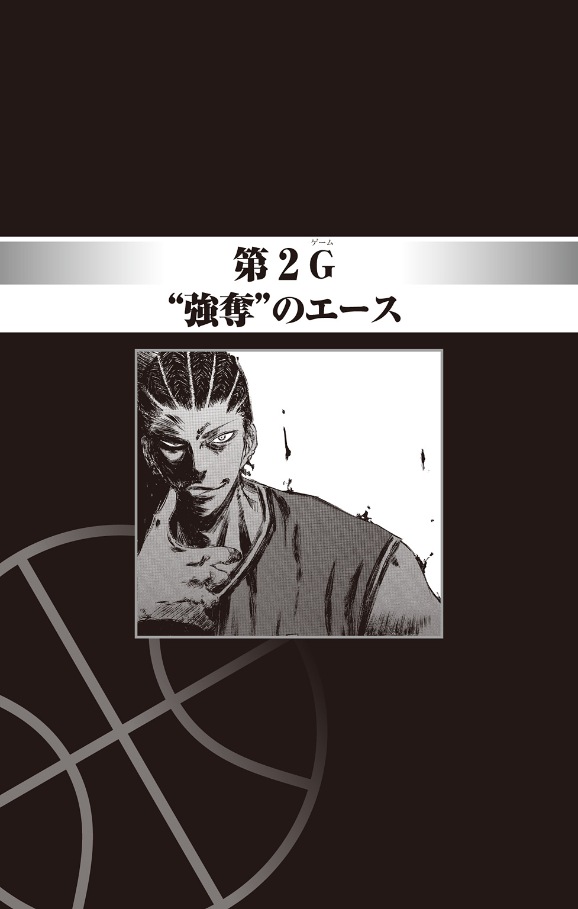
かつて『キセキの世代』の一人と呼ばれた少年がいた。
だが、その『キセキ』を人々の記憶に残す前に彼は突如として姿を消す。
『キセキの世代』の最初の一人にして、最凶の一人。
少年の名は、灰崎祥吾といった。
福田総合学園高校、社会科準備室。
窓から差しこむ西日を顔に受け、バスケットボール部の主将、石田英輝は端正な顔をわずかにしかめた。
「来週からウインターカップの予選が始まる。初戦はＭ高校だ」
この一言を灰崎に伝えるために、石田は今日一日学校中を歩き回った。珍しく灰崎が学校に来ていると聞き、その姿を探し求めたのだが、彼を見つけた頃には放課後になっていた。
灰崎を発見した場所はここ、ほとんど使われていない社会科準備室である。
学校には来たものの、ずっとここで惰眠をむさぼっていたらしい灰崎は、大きく伸びをすると「気が向いたら出るわ」とだけ言い、石田の横を素通りして部屋を出ていこうとする。
「灰崎っ」
石田がとがめるように名を呼ぶと、灰崎は肩越しに振り向き、
「うっせーな、気が向いたら出てやるっつってんだろっ」
いまにも怒りを爆発させそうな剣吞な声と眼差しに石田が息を飲む。その様子に、灰崎はニヤリと口角をあげた。
誰が強者で、誰が弱者か。それを相手に理解させたことに満足したのだ。
「あんたらは、せいぜいオレの足を引っぱらないように調整しとけ」
そう言うと、灰崎は今度こそ部屋を出ていった。
社会科準備室に静寂が戻る。校庭のほうから、運動部の練習する声が聞こえた。
主将である石田も早く練習に行かねばならない。今日も灰崎は練習を休むと部員に伝えれば、彼らは互いにはばかりながらも、ほっと胸を撫で下ろすはずだ。
その様子が容易に想像できて、石田の胸はずしりと痛む。
悩める主将は肺の中にある空気を全て吐き出すような息をつき、社会科準備室をあとにした。
学校を出た灰崎は、まっすぐに繁華街へと向かっていた。
きまぐれに学校に行ってみたものの、たいしておもしろいこともなかったうえ、真面目くさった主将殿の顔を見たせいで、灰崎のテンションは下がってしまった。
ここは景気づけに遊ばねぇとな。そう判断した灰崎は、適当に遊ぶ相手を見繕おうと周囲を見回した。
趣味はナンパだと公言する灰崎だが、ナンパする相手を選ぶ基準は少し変わっている。
食指が動くのはいつも、他人の女だ。
「お、いい女発見」
灰崎がぺろりと指を舐める。視線の先にいるのは、歩道に佇む女子高生だ。丈の短いスカートからはすらりとした足が伸びている。胸はさほど大きくないが、許容範囲内だ。女は手持ちぶさたな様子で長い髪の先を一房とり、枝毛を探している。その隣では、おそらく彼氏であろう男子高校生が携帯電話で誰かと話していた。
彼氏持ちか。完璧だ。
灰崎は軽い足取りで女子高生へと近づくと、通り過ぎると見せかけて、いきなり彼女の肩に腕を回し、強引に歩きだした。
「え、えぇ!?」
驚いた女子高生は目を見開いて灰崎を見上げた。咄嗟のことでつい一緒に歩きだしてしまったが、慌てて足を止めようとふんばる。しかし肩を抱いて歩く灰崎のほうが力は強く、抗いきれない。
「な、なんなのよ、あん......！」
せめて自由になる声だけでも抵抗しようとするが、その顎を灰崎につかまれた。
「はいはい、騒ぐなって。暇なんだろ、オレと遊ぼうぜ」
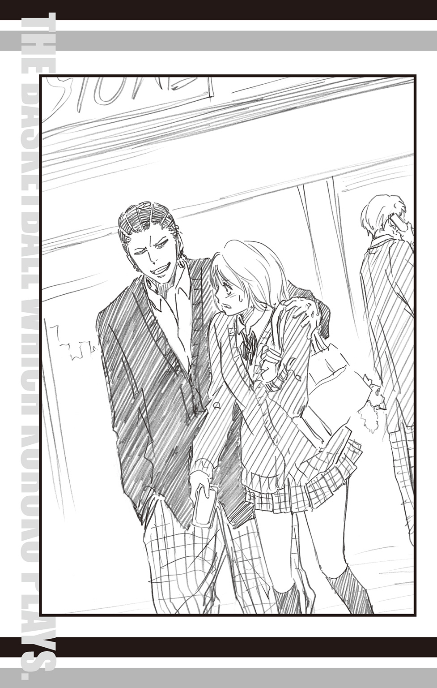
女子高生の顔を間近で灰崎が見下ろす。ハ虫類のような鋭い瞳が彼女を見つめていた。
獲物を狙うような眼差しに、女子高生が本能的に危険を察知し、同時にその危険を堪能したいという願望が生まれる。
その感情の変化を彼女の瞳の色から読み取った灰崎は、くくっと喉の奥で嗤った。
経験上、女がこういう目をしたら必ずオチる。
嗤う灰崎の肩をぐいっと引く手があった。
「てめぇ、オレの彼女になにすんだよ！」
振り向けば、先ほどまで電話をしていた男子高校生が灰崎の肩をつかんでいた。
「なにって......ナンパだろ？」
灰崎が女子高生の肩を抱く力を強めると、彼女は簡単に灰崎の胸に収まった。その光景に男の顔が怒りで朱に染まる。
「っざけんなっ！」
男が灰崎に殴りかかる。
灰崎は嗤った。
経験上、こういう展開になることはあらかじめわかっていた。
もちろん、この手の男に負けるわけがないことも。
月が上空で輝く頃、灰崎はひとりでゲーセンにいた。
「ったく、空ぶりかよ......」
忌々しげに舌打ちをしながらシューティングゲームに興じる。
殴りかかってきた男子高校生を返り討ちにし、見事その男から強奪した女はしばらく一緒に遊んだのだが、「バイトがある」と言って帰ってしまった。
その後もあらためてナンパしようとしたのだが、これといってめぼしい相手がおらず、いつのまにかゲーセンへと流れ着いてしまった。
「これからってときに......」
ぶつぶつと言っているうちに、ちょっとしたミスが引き金となりゲームオーバーの文字が画面に大きく表示される。
「くそっ！ もっとおもしれぇゲーム作れよ！」
苛立ちも露わに筐体を蹴っていると、「ねぇ」と甘い声が聞こえた。
「あぁ!?」
灰崎が苛ついた顔で振り向くと、びくっと肩を揺らす女子高生の姿があった。
ブレザーの制服に短めのプリーツスカート。昼間の女子高生より足は太いが、そのぶん胸がある。
悪くない。
灰崎に声をかけたものの、怒鳴られて怯えたのか、少女は長いまつげの瞳を揺らしながら、少しかすれた声で言った。
「そ、そんなものより......楽しいこと、しない？」
灰崎が黙っていると、少女はどこかぎこちない様子で腕を絡めて体を密着させる。
「あたしじゃ、ダメ？」
淡い色のリップを塗った唇に笑みを浮かべ、ねだるように首を傾ける。その仕草からは、彼女の精一杯の背伸びが感じられた。
灰崎は無言のまま少女を値踏みするように見つめていたが、突然、少女の腰に腕を回すとぐっと引き寄せた。
きゃっと小さく悲鳴をあげる少女に、灰崎はニヤリと笑う。ようやく聞けた女の素の声に満足し、言った。
「いいね。逆ナンは趣味じゃねぇが、たまにはつきあってやるよ」
逆ナンしてきた少女に誘われるままやってきたのは、わりと大きな森林公園だった。
屋外でやろうとは、イイ趣味だなと揶揄する灰崎の手を引いて、少女はどんどん森の奥へと歩いていく。それに伴い、人の気配は徐々になくなっていった。
――と、思ったのだが。
「マジでのこのこやってきたぜ」
突如として現れた人の気配に、灰崎は足を止めた。現れたのはやはり同じ年頃と思われる少年たちだった。彼らはさっと灰崎たちを取り囲み、退路を断つ。
灰崎に腕を絡めていた少女がその手を振りほどき、彼らへ叫んだ。
「ねぇ、約束守ったよ！ もういいでしょ!? ペンダントを返して！」
少女は集団の中でひときわ大柄な筋肉質の男へ駆け寄る。だが、
「ぎゃーぎゃーうっせーよ！」
大柄な男は少女を突き飛ばした。少女は悲鳴をあげて、地面に転がる。
「ちったぁ静かにしてろよ。せっかく福田総合のエースをボコれるってのによ」
「ンだよ、そういうことかよ？」
灰崎はギロリと大柄な男を睨む。公園とはいえ、このあたりには街灯はなく、頼りになるのは月明かりだけなので正確にはわからないが、おそらく十名程度の人間に取り囲まれている。彼らが自分を取り囲むときに、なにか地面を叩くような金属音が聞こえた。各自が金属バットのようなものを持っているのは間違いないだろう。
自分を『エース』と呼び、武器を持って取り囲む。この状況から、導き出される答えはひとつだ。
「てめぇら、Ｍ高のバスケ部か」
言い当てられたことに驚いたのか、周囲の男たちが動揺したようにざわりとたじろぐ。
しかし、おそらく首謀者と見える大柄の男は動じた様子もなく余裕で答えた。
「わかってんなら、話は早ぇな。せっかくだ、選ばせてやるぜ？ ここでボッコボコにされるか、ウインターカップの予選を辞退するか。どう......」
どうする、と続くはずが、男が最後まで言いきることはできなかった。
灰崎が殴りかかったのだ。
「うぐっ！」
ふいを突かれて顔を殴られ、大柄な男は崩れた。灰崎はすかさず、男を蹴り上げる。
「闇討ちなんざ、しけた考えしてんじゃねーよっ！」
二度蹴り上げ、三度目は踏みつけようとしたとき、灰崎の肩に激痛が走った。
「うぐぅぅ！」
痛みを堪えて振り向けば、そこには他の男たちが金属バットを構えていた。
「ちっ、めんどくせぇ......！」
そこからは一方的だった。
次から次へと襲いくる金属バットの攻撃をかわしつつ、灰崎は反撃のチャンスを狙うが、多勢に無勢である。圧倒的に不利だった。
ものの数十秒もしないうちに灰崎は地面に倒れ、浅い息を繰り返す状態となった。
大柄な男が灰崎に殴られた顔を「いてぇ......」と撫でながら、忌々しげに灰崎を見下ろした。
「ったく、手間かけさせんなよ。帝光中出身って聞いたから、てっきり部活しか知らねーボンボンかと思ったのによ」
仕返しとばかりに、灰崎の腹を蹴り上げる。「ぐっ」と呻き声が聞こえたことで溜飲がさがったのか、ようやく表情に余裕が戻った。
「......て......こ......？」
「ああ？」
呻き声に続いて聞こえた声に、男は眉を寄せた。灰崎はごほっと咳きこむと、よろよろと立ち上がり、言った。
「オレを狙ったのは、帝光中出身だからか......？ 帝光の名前がそんなに怖ぇーか」
灰崎の問いかけに、大柄な男は思わず吹き出した。
「ぎゃははははっ！ まさか自分がエースだから狙われたと思ってたのか？ 自惚れてんじゃねーよ。オレたちが警戒してんのは『キセキの世代』がいた学校出身ってとこだ。あいつらに揉まれて練習してきた選手なら、一応警戒しておいたほうがより確実に勝てるからよ」
「......ああ、そうかよ」
次の瞬間、灰崎の動きは素早かった。後ろに迫っていた男の腹に回し蹴りをくらわせ、その手から金属バットを奪う。そのまま駆けだすと、呆然としていた別の男に殴りかかった。
あれだけボコボコにされていたのに、どこにそんな体力があるのだと目を瞠る動きだった。
「やっぱ、得物は奪わねぇと調子出ねぇな」
金属バットをつかみ、硬さを確かめるように掌にぽんぽんと打ちつける。
全ては一瞬で終わった。その場には灰崎がひとりだけ立っている。周囲には殴られ、幸運にも気絶した者、不幸にも意識を飛ばせず、痛みに呻く者などが累々と倒れていた。
否。灰崎以外にもうひとりだけ、倒れていない人間がいた。
「あ、あった......！」
灰崎をここまで連れ出した少女は、倒れた大柄の男のポケットから、細いチェーンのペンダントを取り出していた。
少女はようやく取り戻したそれを大事そうに胸に抱きしめる。
「よかった......ママの形見......！」
「......ちっ、辛気くせー」
頭上から聞こえた声に少女が顔をあげれば、金属バットを肩にのせた灰崎が見下ろしていた。
「あ、あの......」
少女が申し訳なさそうに口を開いたとき――
ドゴッ！
灰崎は彼女の眼前に金属バットを振り下ろした。
「ひぃっ！」
少女が引き攣るような悲鳴をあげる。
灰崎は怯える少女の前にしゃがみこむと、睨めつけるようにして言った。
「こいつらに言っとけ。オレの顔をよーく覚えとけってな。『キセキの世代』の名前なんざ、すぐに取り戻してやるからよ」
壊れた人形のようにこくこくと首だけ動かす少女に念を押し、灰崎は立ち上がると独りごちた。
「ったく、やっぱ逆ナンなんて趣味にあわねーことにつきあうもんじゃねーな。強奪しねぇと、なんもおもしろくねーぜ」
翌日。福田総合学園高校、バスケ部主将の石田はその光景に頭痛を覚えた。
「あぁ？ ンだよ、こら。なに見てんだよ」
実に珍しく灰崎が練習に参加しているのだ。
しかもどういうわけか、体中に包帯を巻いている。
珍しさと異様さに、どの部員もつい彼を見てしまう。そのたびに灰崎が苛ついた声をあげるので、部内の雰囲気がギスギスすることこのうえない。
しかしウインターカップの予選が近い今、エースである灰崎が練習に参加してくれるのは、ありがたいことだった。
ただ一点、確認すべきことがあった。
「......灰崎、まさかと思うが、ケンカをしたわけではないよな？」
灰崎を刺激しないよう、慎重にタイミングを選んで問いかける石田に、灰崎は「ちげーよ」と短く答えた。
どう考えてもケンカ以外の理由でそれだけの怪我をするとは思えないが、この時期に変な騒動を起こされては困る。しかし、灰崎が「違う」と言うのであれば、それが表面化することはないということを石田は知っているので、ほっと胸を撫で下ろした。
石田の意図を汲み取った灰崎は、はっと鼻で嗤う。
「予選に出られないようなヘボなマネはしねーよ。オレも俄然ウインターカップには出たくなったからな」
「なに......？」
灰崎の突然の心変わりに石田は目を見開いた。
驚く石田の視線を背中に受けながら、灰崎は転がっていたボールを拾うとシュートをうつ。
ボールは力強い弧を描き、狙い定めたゴールに吸いこまれた。
真面目に練習していた選手のやる気を削ぐような見事なシュートに、誰もが言葉をなくす。
しんと水を打ったように静まりかえった体育館内に、灰崎の声はよく響いた。
「ちょっと本気で奪いたいものが出来たんだよ」
かつて『キセキの世代』と呼ばれた男の真意を理解する者は、いなかった。
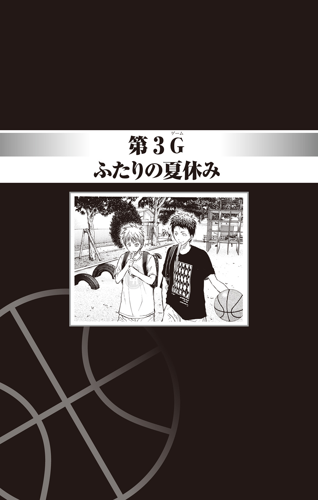
夕方の公園で、荻原シゲヒロは首をかしげながら黒子テツヤに尋ねた。
「黒子、なんか今日いつもと違うな」
「え？」
転がったバスケットボールを拾いに行こうとしていた黒子は動きを止め、振り返る。
「違うって、何がですか？」
「わからん。でも、なんか違う！」
言い張る荻原に黒子は困ったように眉を寄せた。その顔を見て、荻原が「わかった!!」と叫んだ。
「今日のおまえ、どことなく嬉しそうなんだ！」
「え？」
「ちょっとだけ、口が笑ってる！」
バシッと口元を指さされ、黒子は確認するように口に手をあてた。ついでに「人を指さしちゃいけませんって、おばあちゃんが言ってました」との忠告も忘れない。
黒子は指先でふにふにと唇に触ると荻原に尋ねた。
「ボク、笑ってましたか？」
「ああ。ほんのちょっとだけどな！」
いつもあまり顔色を変えない黒子のわずかな変化を発見できたことが嬉しくて、荻原は威張るように胸を張った。黒子は「そうですか......」と少し考え、やがて言った。
「きっと、浮かれているんだと思います」
「浮かれてる？ なんで？」
きょとんとする荻原に黒子は微笑ではなく、にっこりと笑ってみせた。
「だって、あしたから夏休みですから」
そう、夏休みなのである。
黒子テツヤと荻原シゲヒロが出会ってから、はじめての夏。
小学生にとっての最大のイベントが開幕する。
七月二十三日。
早朝の公園で、荻原と黒子は声をあわせた。
「いっせーのせっ！」
かけ声と同時に、首からさげているラジオ体操カードを見せ合う。
時刻は六時四十分。夏休みだけ行われるラジオ体操に参加したあとである。
ふたりが突き合わせたカードには、それぞれ参加スタンプが四個ずつ押されていた。
「あれ!? 黒子、皆勤賞!?」
荻原が黒子のカードを見て、目をぱちくりとさせた。
「だから言ったじゃないですか。ちゃんとボクも参加してるって」
黒子が少しだけ批難するように言うので、荻原は「あはは......」とばつが悪そうに笑った。
「わりぃ。毎朝、黒子探すのに全然見つけられなくてさ。てっきり来てないのかと思ったんだよ」
「ちゃんと参加してます。スタンプを押す人に、見落とされがちですが......」
「やっぱり......。大変だな、おまえも」
「でも、いいこともあります」
黒子が言うには、今朝のラジオ体操には遅刻してしまったのだが、係の人にダメもとでスタンプをお願いしてみたところ、
「ありゃ、押してなかったか？ いつも見落としちまってごめんな」
と逆に謝られ、スタンプを押してもらえたという。
「ズルッ！ それってズルくね!?」
抗議する荻原に黒子はしれっと答える。
「日々の行動の賜物です」
「夏休み入ってまだ四日じゃん!! 全然、日々のタダモノにはなってねーよ！」
「タダモノではなく、賜物です。それに遅刻といっても、ちょっとだけでしたから」
「えー、本当かぁ？」
納得できない荻原に同調するように、セミが鳴き始めた。
鳴き始めは一匹だったが、すぐに他のセミも参加し始め、公園内にセミの合唱が響きわたる。彼らの寸暇を惜しむ鳴き声に刺激された――わけではなく（そこに気づくような繊細さを持った少年ではない）、単に思い至ったのだろう、荻原は「こんなことしてる場合じゃねぇ！」と足下に転がしてあったバスケットボールを拾い上げた。
「黒子もやってくだろ？」
「いえ、今日の午前中は宿題をする予定なので」
「えーっ、もう宿題やってんのか!?」
荻原は思わずボールを取り落とした。「黒子んちの学校、宿題多いのか......？」
問われた黒子は指折り数えた。
「えーっと、ドリルが少しと、読書感想文と自由研究ぐらいです」
「なんだ、うちと変わんねーじゃん。そんなのあとでばーっとやればいいって！ 今日はバスケしようぜ！」
荻原は再度誘ったが、黒子の意志は固かった。午前中は図書館で読書感想文用の本を選ぶと決めていると言って譲らない。
短いつきあいではあるが、黒子の頑固さを知っている荻原は、これ以上は誘っても意味がないと諦めた。
すると、今度は黒子がおずおずと尋ねた。
「荻原君、午後はどうしてますか......？」
「んー、決めてないけど、宿題はしてねーと思う」
「よかったら、午後にバスケ教えてくれませんか？」
「もちろん！」
快諾する荻原に、黒子は嬉しそうに微笑んだ。
なんだかんだと言いながらも結局は毎日一緒にバスケをする。
それが彼らの夏休みの定番になりつつあった。
八月三日。
午後の日差しを浴びて、プールの水面はキラキラと輝く。
市営プールは近隣の子どもたちであふれかえり、水面は絶え間なく揺らいで乱反射が止むことはない。
午前中いつもの公園でバスケをした黒子と荻原は、たまにはバスケ以外のこともしようぜとプールに来ていた。
「これでは泳ぐというよりもプールに浸かるという感じですね」
プールの壁に背をつけ、黒子は人混みに戸惑った声をあげる。しかし荻原は反対に楽しそうにニカッと笑った。
「この人混みを抜けながら泳ぐのが楽しいんじゃねーか！」
一瞬、目を瞠った黒子は思案するように俯くと、
「......なるほど。荻原君の発想は勉強になります」
と、うんうんと頷いた。
壁を蹴って人混みの中へ泳ぎだすタイミングをはかっていた荻原が黒子を振り仰いだ。
「ゲッ、こんなところでも宿題する気なのか？」
顔をしかめる荻原に黒子は首を振った。
「そういう意味の勉強ではありません。荻原君の考え方はとても参考になるという意味です。ボクはこの人混みを少し不快に感じたのですが、荻原君のように逆転の発想をすれば、楽しくなるんだなと思ったんです。そういうの、大事ですよね」
荻原は片眉をあげて「ふーん......？」と曖昧な相づちをうった。この本好きの同級生は時おり、荻原が気づかないようなことに気づき、考え、人知れず理解をして、納得している。
「黒子はいつも難しいこと考えてるんだなぁ」
「そんなことありません。単におもしろいなと思っただけです」
「いや、普通そんなこと思わねぇし。まあ、そこが黒子のおもしろいところだよなっ！」
「そうでしょうか」
「そうだよ！」
荻原は明るく笑うと「プールの真ん中へんまで泳ごうぜ。そこまで行けば、人も減ってるし！」と壁を蹴って泳ぎだし、黒子も慌ててあとを追った。
後年、黒子が人混みの中を泳ぐように移動できるようになったのは、荻原とのプール遊びに由来するとか、しないとか――。
八月十六日。
朝からバスケに熱中していたふたりは、腹の虫の悲鳴によって時刻が既にお昼を回っていることにようやく気づいた。
気づかないときは平気でも、気づいてしまうと空腹感は加速する。
すぐさま持参したお弁当を広げようとした荻原を黒子がおしとどめ、近くの水飲み場で手を洗ってからあらためてベンチに座った。
黒子がお弁当の蓋を開けると、甘辛い香りがふたりの鼻をくすぐった。
「お稲荷さんか！ うまそーっ！」
荻原が黒子のお弁当箱を覗きこんで目を輝かせる。そこには黄金色のふっくらした稲荷ずしが並んでいた。
「おばあちゃんが油揚げを煮てくれて、お母さんがおすしを作ってくれました。荻原君はおにぎりですね」
黒子は荻原が膝に広げた包みに目をやった。俵型のおにぎりに海苔がくるりと巻かれている。
「ああ。今日は自分で作ってみた！」
「本当ですか!? すごいです......！」
黒子は目を丸くして、じっとおにぎりを見つめた。よくよく見てみれば、どのおにぎりもややいびつで、荻原の苦戦を物語っている。
「一個、交換する？」
「ええ、ぜひ」
荻原の誘いに黒子は二つ返事で頷き、ふたりの間をおにぎりと稲荷ずしが行き来する。
もらったおにぎりを黒子が一口ほおばった。
「おいしいです......！」
「マジ？ よかったー！」
「ご飯の握りぐあい、ちゃんとしてますね。ボクもこの前作ってみたのですが、ご飯が熱すぎて握れず、ボロボロになってしまいました」
「そうそうっ！ 炊きたてのご飯って、すっごく熱いよなっ。とりあえず少し冷ましてから作ったんだけど、そうするとおいしくないって母さんは言うんだよ」
「どう違うんでしょう？」
「さぁ......？」
荻原はぱくりとおにぎりに食らいつき、「うーん、ちょっと固いか......？」と首をかしげた。
お弁当を食べながらの話題はつきることがない。昨日見たテレビのこと、誕生日に買ってもらったプレゼントのこと、最近読んだ本のこと。ほとんどは荻原が話し、黒子が聞き役に回るのがいつものことだが、ふたりともそれを苦痛に感じたことはなかった。バランスとしてそれがちょうどよいのだ。
やがて話題は夏休みの宿題へと変わった。これまでこの話題だけはずっと避けてきた荻原だが、夏休みも後半に入ったいま、彼にとって避けられない懸案となっている。
「やべーよ、なんも手つけてないんだよ......」
「なんにも、ですか？」
「うん」
はっきりとした肯定に、黒子は「そうですか......」としんみり答え、
「では、やるしかないですね」
と、きっぱり断言した。
「そうなんだけどさー、やる気しないんだよー。自由研究とか、なんも思いつかなくてさー」
まるでやけ酒をあおるサラリーマンのように、荻原は水筒の茶をぐっと飲み干す。
「なにがいいですかね......」
しばらく黙りこんだふたりであったが、黒子が「あっ」と声をあげた。
「どうした？」
「おにぎりとか、どうですか？」
「え、もうないけど？」
荻原は自分の膝の上に広げたランチ用マットを見下ろす。彼お手製のおにぎりは既に食べ終えて、残っているのは包んできたアルミホイルのみだ。
「おにぎりの握り方を自由研究にするんですよ」
「はぁ？」
間抜けた声を出す荻原に、黒子は「いいですか」と前置きをして説明を始めた。
「炊きたてのご飯で作るおにぎりと冷ましたご飯で作るおにぎりとで、味や見た目などを比較検討してまとめるんです。他にもレンジで解凍して温め直したご飯も用意してみたりすれば、いろんなパターンを提示できて、自由研究になるんじゃないですか」
「なんかおもしろそうだな、それ！」
「しかもお弁当用のおにぎりも用意できるし、一石二鳥だと思いますよ」
「そっかっ！ いいな、それ！ ナイス、黒子！」
ずっと懸案だったことが一気に解決され、荻原は晴れやかに笑った。
「おーしっ、問題も解決したし！ バスケやるぜ！」
跳ね上がるように両手を伸ばして立ち上がると、荻原はコートへと駆けだした。黒子が「あっ、待ってください」と慌てて声をかけたが、駆けだした荻原は止まらない。
残された黒子は困ったようにぽりぽりと頰をかいた。
「ついたままだって言いたかったのですが......」
真夏の太陽によって黒く灼けた荻原の頰で、米粒が白く輝いた。
八月二十五日。
八月も終わりに近づき、夏休みも終わりが見えてきた。限りある時間を一瞬でも無駄にはできないと言わんばかりに、黒子と荻原は今日も一緒にバスケに励んだ。
夕方、汗でべたつくＴシャツの首元をぱたぱたとしながらふたりが向かったのは、公園近くの駄菓子屋だ。バスケのあとにここへ立ち寄ることも、夏休みの定番コースと化していた。
狭い店内に所狭しと置かれたお菓子を丹念に吟味していた黒子に、荻原が「見ろよ、これ！」となにやら棒状のお菓子を差し出した。
「まいう棒の梨味！」
「すごい......！ 味が想像しづらいです」
「オレ、これにする！ 黒子は？」
「暑いので、アイスにしようかと」
「アイス！ いいな、オレもそれにしようかな～、でも、このまいう棒も気になるし......」
できれば二つとも買いたいところだが、財布の中身と相談すると一日で二つ買うことはためらわれる。
あー、うー、でもな～と唸り、葛藤する荻原に黒子はささやかな提案をする。
「ボク、二つに割れるアイスにしますから、分けあいませんか？」
「え、いいのか!?」
黒子はこくりと頷いた。
「じゃあ、まいう棒も半分こしようぜ。それなら平等だ！」
かくして両方の味を無事に堪能できたふたりであったが、梨味は予想以上に普通の味で、「もう少しパンチがほしいよな」「そうですね......」という中途半端な感想で終わった。
お決まりである荻原の口回りについたお菓子を黒子が指摘しおえると、ふたりはある場所に向かって歩きだした。
一日の定番コースは駄菓子屋で終わりではないのだ。
商店街の中を進んでいき、やがて現れたスポーツ用品店の前で足を止める。
「やっぱ、いいよなぁ......」
「新しいのはキレイですね......」
荻原と黒子はショウウィンドウの前で羨望のため息を漏らした。
展示されているのは真新しいバスケットボールとシューズだ。
大人向けの本格的な道具は黒子と荻原の憧れの存在である。
「いい加減、これも限界だしなぁ」
そう言って、荻原は持っているバスケットボールを見下ろした。
彼らがいつも使っているのは荻原の私物であった。この夏、ひたすらバスケに熱中するふたりを支えてきたボールは、さすがにくたびれてきていた。全体的に表面はこすれ、ドリブルをしていても、手から滑ってしまうことも稀ではない。さらには、とうとう表面の一部が破れて欠けてしまった。
「新しいのってけっこうしますよね......」
黒子がショウウィンドウに額をつけ、ボールの前に置かれた値札を見る。
小学生の彼らにとっては、お小遣いをそうとう頑張ってつぎこまねば、手に入りそうにはない金額である。
「オレ、誕生日プレゼントにバスケットボールって言えばよかった！」
荻原が悔しそうに頭を抱えた。今月が誕生月だった彼だが、誕生日プレゼントにはマウンテンバイクをもらったのだ。こちらもけっこうな金額のものなので、いまさらバスケットボールも欲しい、とは言いづらい。
「焦らずこつこつとお金を貯めましょう。ボクも貯金がんばります」
「それで買えば、ふたりのものってことだな！」
「はいっ」
ふたりが決意を新たにしていると、店の入り口の自動ドアが開いた。
「また来るぜー」
店奥に親しげに声をかけながら、男がひとり、外へと出てくる。
店内から返ってきた「今度来るときゃ、自慢の娘連れてこいよ」という苦笑混じりの声に手をあげ、出てきた男はショウウィンドウ前にいた荻原に気づいた。
「お？ なにしてんだ、坊主」
まさか声をかけられると思っていなかった荻原は驚き、その拍子にボールを落とした。
「あ！」
ボールは跳ねて転がり、男の足にぶつかって止まる。
「お、バスケットボールじゃねぇか」
男は片手でボールを持ち上げ、ボールの表面を撫でた。「はは、ツルツルだな」
ボールを片手で持つなど、夢のまた夢の状態である荻原たちは尊敬の眼差しで男を見上げた。しかし、男は太陽を背に立っているので顔がはっきりしない。
男は「ほれっ、落とすなよ」とボールを放ってよこした。荻原がキャッチし、黒子が「ありがとうございます」とお礼を述べた。
「うおっ!? なんだ、もうひとりいたのか！」
男は黒子の存在にようやく気づいたらしく、のけぞる。
「で、おめーらは何を......ああ、そういうことか」
ウィンドウの中を見て、荻原たちの目的がわかったのだろう。男は質問を途中でやめ、勝手に納得した。ツルツルになったボールの感触が目の前の子どもらの関係を如実に教えてくれている。
「ま、先行投資も悪くねぇな」
男の呟きに荻原たちは「え？」と聞き返す。
それには答えず、男は肩に提げていたスポーツ用品店のロゴが入った袋から、あるモノを取り出した。
「ほら、これやるよ」
と、黒子に投げ渡されたのは、真新しいバスケットボールだった。
「えっ！ これ!?」
「ああ、それ。欲しかったんだろ、ボール」
荻原と黒子は顔を見合わせる。
「いいの？」
「ああ。うちの嫁さんには内緒な。......なんて、おまえらに言ってもわからねぇか」
男は笑ったようだった。
黒子はぎゅっと確かめるようにボールを両手で押さえ、掌全体で真新しいボールの感触を味わった。
「新しいボールです......！」
「うわぁぁぁぁぁ!! 新しいボールだよ!! すげーっ!!」
荻原も、あたりを飛び跳ねまわって喜んだ。
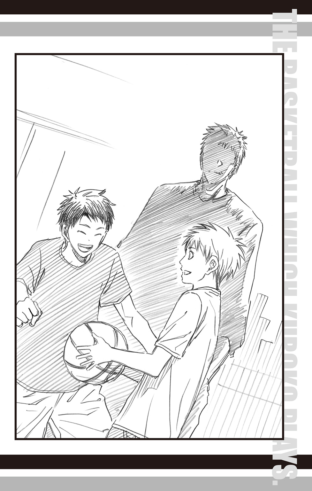
「すげーっ！ すげーっ！ ありがとう、おじさっ......あれ？」
荻原が目を瞬かせる。
黒子も目を瞠った。
新しいボールをくれた親切な男は、いつのまにか姿を消していた。
黒子が手の中のボールを見つめ、ぽつりと言った。
「本当にいいんでしょうか、これをもらっても」
迷っている口調ではあるが、その手はボールを離したくないと、しっかりと押さえていた。
隣で荻原が力強く頷く。
「いいんだよ！ やるって言ってたし！」
「そうですね」
荻原の言葉に、黒子は嬉しさにあふれた笑顔を見せ、あらためてぎゅっとボールを抱きしめる。
「荻原君、今から少しだけバスケをしませんか？」
「え、マジ？ 実はオレもいま、それを言おうと思ってたんだ！」
「ボクたち、こういうところは気が合いますね」
「だな！ よし、公園までダッシュ！」
「はい！」
ふたりは先を争うように走りだした。
夏の終わりを惜しむように、ひぐらしが鳴き始める。
しかし並んで走るふたりにとって、惜しむ気持ちなどなかった。
たとえ夏が終わっても、きっと自分たちは一緒にバスケをするだろう。
そしていつか、広いコートの上に一緒に立つのだ。
ひぐらしの鳴き声が一層大きくなった。
それを嗚咽とともに聞く夏は、そう遠くない未来のことだ。
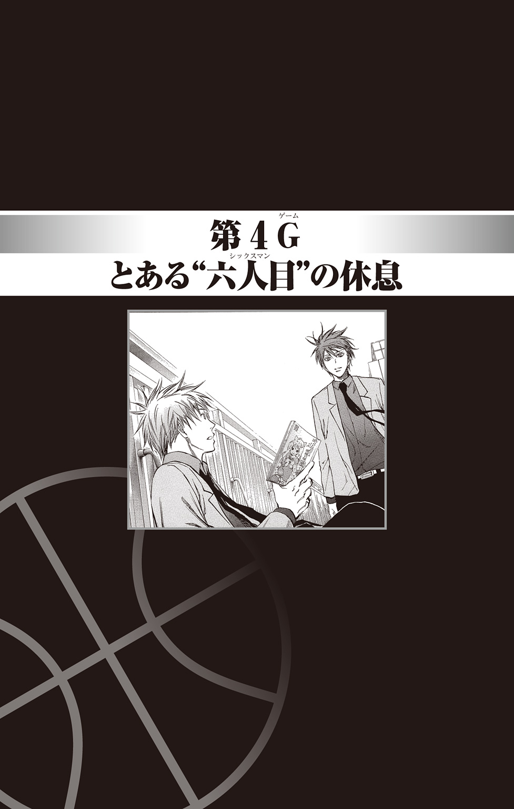
洛山高校の北棟、屋上。
そこがオレの昼休みの指定席だ。
他の棟にも当然屋上はあるが、ここ以外の屋上にあがろうとは思わない。
洛山高校に入学してから二年と少し。各棟の屋上を比較検討した結果、北校舎の屋上が一番吹き抜ける風が弱く、かつ静かで、読書をするには適した環境と結論づけた。
以前、クラスメイトに「黛、なんで屋上にこだわるんだよ？」と聞かれたことがある。
読書をするだけなら、中庭でも、食堂でも、それこそ図書室でもいいのだが、オレの足が屋上に向いてしまうのは、やはり刷りこみによるものなのだろう。
刷りこんだのは、オレがいまも手にしているこの文庫本、ライトノベルだ。
オレが愛読するラノベにおいて、屋上はとても重要なスポットとして登場する。
物語の登場人物たちが、未知の物体を見つけたり、謎の転校生と出会ったり、秘密を打ち明けられたりするのが、屋上なのだ。
その登場回数の多さに、自然と足が屋上へ向いてしまうようになったのだと思う。
だからといって、オレが未知の物体を見つけたいとか、謎の転校生に出会いたいとか思っているわけではない。
所詮はフィクションの中の話だ。
オレはただ静かな屋上で、好きな物語を堪能できればいい。
そう、思っていた。
「お、黛さんじゃん！」
軽い響きの声に、座ったままちらりと視線だけを送れば、屋上の扉を開け、葉山小太郎がこちらへと歩いてくるのが見えた。
全身がバネのように柔軟な筋肉を持つコイツは、歩いていてもまるで跳ねているかのように軽やかだ。
「......なにか用か？」
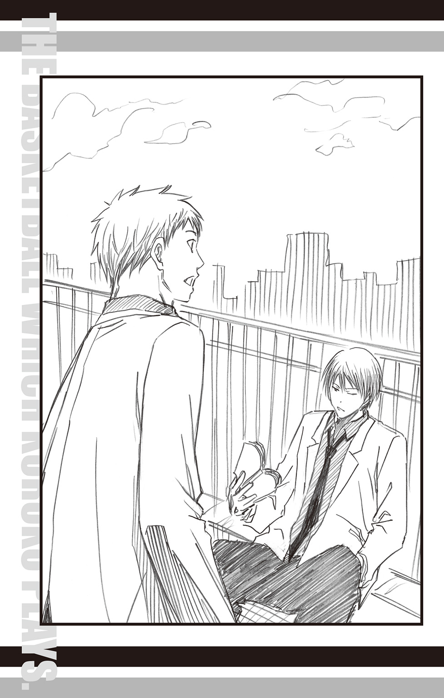
「べつに、あんたに用はないよっ」
ついでに言えば、オレに対する口調も軽い。
殊勝にも「黛さん」と呼んでくるが、その響きに「先輩」に対する敬意などない。おそらく、オレのことは自分のフィールドに放りこまれた新しいおもちゃぐらいに見ているのだろう。
まあ、無理もない。
赤司からミスディレクションを伝授され、三年生で唯一のレギュラー入りを果たしたオレは、ヤツらにとっては物珍しいおもちゃなのだろう。
かといって、その扱いを笑って受け流せるほど、オレも大人ではないが。
葉山はきょろきょろと周囲を見回すと「永ちゃん、知らない？」と尋ねた。
オレに用はないと言いながら、聞くのか。
「根武谷に用なのか」
「そ。赤司からの伝言があってさー。ここにいるかと思ったんだけど、ハズレかー」
葉山は「ちぇっ」と口を尖らせると、頭の後ろで腕を組み、オレの文庫本に視線を落とした。
「黛さんは読書？ 何読んでんの？」
「言っても、おまえが興味を持ちそうにない話だ」
「うっわ、ばっさり切ったよ、この人っ」
オレのすげない返事に気を悪くしたのか、葉山はくるりと体を反転させて「そりゃ、オレは本読まないけどさっ」と文句を言いつつ校舎内へと戻っていった。
相変わらず、簡単に挑発に乗ってくる。
静けさを取り戻した屋上で、オレはやれやれとページを繰り、はたと気づいた。
きまぐれとはいえ、あいつがオレに興味を持つなんて珍しい。
「あら、本当にここで読んでるのね」
聞こえた声に、内心ため息をつく。どうやら今日は千客万来のようだ。
オレは視線をあげることなく、屋上に現れた相手の名前を呼んだ。
「どうしたんだ、実渕」
「あなたがいつもここで読書をしてるって征ちゃんから聞いたから。どんな所かと思って来てみたの」
そんなことで、わざわざ来たのか。
顔をあげて見ると、実渕玲央は眉をひそめて周囲を見回していた。
「景色がいいわけでもないし、なんてことない屋上じゃない。ヤダ、しかも日差し強くない？ 灼けちゃうわ」
ブチブチと文句をたれる実渕が小脇に本を抱えていることに気づき、オレも眉をひそめた。
「まさか......本を読むつもりで来たのか？」
「そうよ。毎日ここで本を読んでいるって聞いたから、よっぽどいい所かと思ったのに、当てが外れたわ」
それはよかった。ここの美点である『人気のなさ』が損なわれてしまう。
「あんた、いったいどんな本読むんだ？」
早く去ってほしいと思いながらも、つい好奇心が湧いて尋ねると、実渕は「ふふっ」と笑った。
「詩集よ。いま凝ってるの」
予想外の答えだ。高校二年の男子が詩集好きとは、なかなかセンチメンタルだ。
「たとえば、誰の詩を読むんだ？」
「いま読んでいるのはハイネ。愛の詩人よ」
そう言うと、実渕は持っている本を取り出し、チュッと表紙にキスをした。マジか。
「いつか出会うすてきな方に、詩の朗読をしてあげるのが夢なの」
実渕はうっとりと微笑むが、ヤツより半年長く生きているオレの人生において『詩の朗読を喜ぶ女』に会ったことはないし、聞いたこともない。
そもそも詩の朗読を、どんなタイミングでするつもりなんだ。
次から次へと疑問が浮かび、悶々としているうちに、実渕が踵を返した。
ようやく帰るのか......と思っていると、ヤツは扉に手をかけたところで振り向いた。射貫くような冷たい瞳でオレを見つめる。
「読書もいいけど、あなた少し体力つけたほうがいいわよ。スタミナが圧倒的に足りなさすぎ。あれじゃ、試合で足を引っぱるわ」
昼休みに悠長に読書している場合か、と言いたいようだ。放っといてくれ。これでも赤司の特別メニューはちゃんとこなしている。
かといって、それを反論の材料として使うつもりはない。
オレが黙っていると、実渕は承諾したと受け取ったのか、糠に釘と思ったのか、勝手に続けた。
「今日の放課後、少し練習につきあってもらうわよ。ミスディレクションにもっと慣れておきたいの。よろしくね」
一方的に約束を、いや命令をすると、実渕は扉の向こうに姿を消した。
バタンと扉が閉まり、階段を降りていく実渕の気配が遠ざかる。
「へぇ......。あいつが練習をお願いするなんて、珍しいな」
声は、上から聞こえた。
屋上出口の屋根の上で、むくりと起きる人影。
「赤司から伝言があるらしいぞ」
オレが視線を本に戻しながら声をかけると、人影は「らしいな」と笑い、巨体に似合う豪快な動きで、屋根から飛び降りる――根武谷永吉。
「意外だったぜ。てっきり、小太郎にオレのことを教えると思ったのによ」
こきこきと首を鳴らしながら、根武谷は楽しげに言う。
「別に。あそこであんたがここにいることを葉山に言えば、よけいにうるさくなると思っただけだ」
「ははっ、ちげーねぇな。まぁ、一応礼は言っとくわ。おかげで腹ごなしの時間は取れた」
言うやいなや、げぷーっと豪快な音が響いた。礼を言うくらいなら、ゲップを控えろ。昼休みが始まってすぐに「食べすぎたぜー」と、ぽっこりとお腹を膨らませてやってきたが、消化は終わったようだ。代謝がよすぎる。
「しっかし、まさか小太郎がここを探しに来るとはな。赤司から、穴場だって聞いてたのによ」
「......赤司が？」
「ああ。ここは昼休みになると、あんたしかいなくて静かだって言ってたんだよ」
なるほど、道理で今日はやたらと人が来るわけだ。
オレは文庫本から顔をあげ、根武谷を見つめた。
「赤司の伝言、聞きに行かなくていいのか？」
「あんたに言われなくてもわーってるよ。これから聞いてくる。つか、小太郎どこに行ったかな」
「食堂だ」
「はぁ？」
「さっきの様子と、時間経過を考えると、そろそろ探すのに飽きて、喉が渇いてるはずだ。食堂で一息ついてるんじゃないか」
「飲み物を買うなら、自販機でもできるぜ？」
「葉山にはおまえを探すという目的がある。とりあえず食堂へ行き、探すついでに飲み物を買うだろうな」
「へぇ......」
オレの推測に根武谷はおもしろそうに目を細めた。
「あんたの人間観察も板についてきたな。もし当たってたら、今度昼飯おごるよ」
「いらん」
即座に答えると、根武谷はさもおかしそうに笑い声をあげ、屋上を出ていった。
屋上の扉が開く気配がした。
「赤司か」
「よくわかったね」
文庫本から顔をあげずに尋ねると、入ってきた人物は別段驚いた様子もなく肯定した。
近づいてくる気配に、オレは文庫本に栞を挟み、本を閉じて顔をあげる。
赤司征十郎がオレを見下ろしていた。
「何か用か？」
「ああ。新しいプレイスタイルは気に入ったかと思ってね」
「いまのところ問題ないな」
「それはよかった。おまえには今後活躍してもらうつもりだからね」
幻の六人目の代用品として、か？
とは尋ねなかったが、どうやらオレの視線からそれを読み取ったらしいこいつは、ふむと笑う。
「新しい時代を作るのは、新しいスタイルだ。おまえにはその資質が充分にある。だが、旧型を無視したスタイルは、ほころびやすい。古きものを知ってこそ、新しさに意味がある」
「わかってるよ。だから言われたとおり、人間観察も怠ってない。わざわざ『無冠の五将』をオレのところに誘導しなくてもいい」
オレの答えに、赤司は目を柔らかく細めた。
「おまえは賢いな」
奇妙だと思ったのだ。同日に「無冠の五将」の三人が、次々とオレのもとを訪れるなど。
全てはこいつがさりげなく彼らを誘導した結果だった。
おそらく、彼らの日常生活における態度を観察させ、オレのミスディレクションの効果をあげようという考えだったのだろう。
赤司の思惑どおり、オレは無意識にヤツらを観察してしまっていた。
「おまえには、どの『光』とも均等につきあってもらうつもりだ。それゆえに彼らと接点はあったほうがいいと思ったんだが、余計だったようだな」
「......おまえには、ってことは、旧型は違うのか？」
「テツヤはその相棒である『光』と元から深い信頼関係を築いていた。だから、より輝かせることも『影』に徹することもできた」
黒子テツヤ――幻の六人目。
その名を出すとき、こいつは少しだけ瞳の鋭さが増す。自分が見いだした力が、自分に刃向かう姿が気に入らないのか。それとも、その異質さゆえに警戒を......？
ふと気づくと、文庫本を強く握りしめていた。なにを熱くなってるんだ、オレは。
オレは、オレだ。旧型とは違う。
「先に中へ戻るよ。また放課後に」
赤司は笑みを見せて、踵を返した。
バスケプレイヤーとしては存外に小さな背中をオレは見つめる。
誰も寄せつけない孤高な王は、期待は示しても信頼は寄越さない。
赤司にとっては、オレも所詮は駒のひとつに過ぎないのだろう。
これが高校一年の後輩だというのだから、とんだバケモノだ。
「やっぱり屋上ってのは、異世界人と出会う場所なんだな」
赤司が階段を降りていく気配を追いながら、自嘲するように独りごちて、オレも立ち上がった。
いつもより早いが教室に戻るか。放課後に練習もある。少し寝ておくとすっきりするだろう。
歩きながらつらつらと考えているうちに、はっと我に返る。
これではまるで、バスケの練習に青春をかけている学生みたいじゃないか。
熱くならないのが、自分だと思っていたのに。
駒として扱われることをおもしろくないと感じながら、それでもいまのバスケを楽しいと思っている自分がいる。
「......なるほど。異世界人らしく、異世界の扉を開けてくれたってわけか」
オレはくくっと笑った。皮肉でも達観でもなく、口の端をあげる。挑むように。
『扉』を開けてしまったからには、最後までつきあってやるのも悪くない。
足を止め、空を見上げた。
実渕が文句をつけていた太陽が輝いている。
光の強さに目を閉じた。瞼の裏に、夏に向かって強さを増す太陽の光を感じる。
夏が来る。
待ち遠しさを覚えるのは、公式戦デビューが間近なせいだろう。
諦めていたことが叶う現実に、やはり胸は躍る。
オレは瞼をあげ、扉を開けた。
果たしてこの先に、ハッピーエンドが待つのか、残酷な末路を辿るのか。
それを知るのはおそらく、あの孤高の王だけだ。
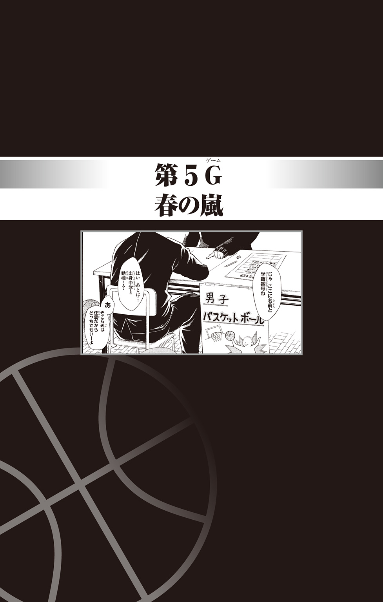
誠凛高校のクラブ勧誘は盛り上がっていた。
桜の咲く校庭に各クラブのブースがずらりと並び、派手なポスターや立て看板があちらこちらに置かれ、新入生の気を引こうとする上級生たちの声が途切れることはない。
ブースの前で、屈強なラガーマンがチラシを配りながら、
「ラグビー興味ない!? ラグビー！」
と叫べば、反対側のブースではユニフォームに身を包んだ野球部員がバットを構えて、
「日本人なら野球でしょー！」
と対抗意識を燃やす。
元気に声を張り上げるのは、運動系のクラブだけではない。
「将棋、興味ない!? 初心者、大歓迎！」
文化系のクラブも負けじと大声をあげ、存在感をアピールしていた。
中には、絡め手で主張するクラブもあり、
「漫研でーす！ いま入部すると、手芸部特製ベレー帽、プレゼント！」
「手芸部でーす！ いま入部すると、漫研特製『漫画で解説！ ベレー帽の作り方』をプレゼント！」
と謎のコラボレーションで勧誘するクラブまであった。
このように各クラブが積極的に新入生獲得へ走るため、校庭は生徒でごったがえし、「普通に歩いているのに十分で五メートルも動けね〜！」と嘆く新入生が出るほどだ。
その人混みの中に『彼』はいた。
肩から提げた鞄を小脇に挟むようにして持ち、反対の手には文庫本を開いて、あふれかえる人波を縫うように歩いていく。
視線は本から離れることはなく、すれ違う人とぶつかりそうになってもするりと避け、何事もないようにページを繰る。
静かに歩く彼に、誰も気づかない。まるでそこに存在しないかのような希薄さ。
勧誘に余念のない文学部員も、彼と正面からすれ違ったというのに気づくことはなく、別の生徒を勧誘し始めていた。
誰の視線にも留まることなく歩いていた彼が、ふいに足を止めた。
体はそのままに視線だけを右に向ける。
校舎近くの人混みの外れ。そこには掲示板があった。各クラブのブース場所を記した地図が張られている。
彼は視線を走らせ、目的のクラブを探す。
『バスケ部』
その単語を見つけたとき、彼の視線が少しだけ熱くなった。ずっと物静かだった瞳が、睨むように細められる。秘めた決意がわずかだが表情に浮かびそうになり――
彼はすっと視線を掲示板から外した。背後で人が立ち止まる気配がしたのだ。掲示板を見る人の邪魔になってはならないと、その場を離れる。表情はまた静かなものへと戻っていた。
背後で「人の気配がしたんだけど......」と困惑した声が聞こえた。
彼は小さく息を吐き、開いた文庫本の残りのページ数を確認する。
目的の場所は確認できた。人混みもすごいし、この本を読み終えてから申しこみに行っても間に合いそうだ。
静かに読書できる場所、できれば日当たりの良いところがいいなと考えながら、彼は歩きだした。
「ん？」
日向順平が足を止め、振り返った。
「どったの？」
一緒に歩いていた小金井慎二も足を止め、日向に尋ねる。
「人の気配がしたんだけど......」
日向は曖昧な返事をすると、ちょうど通り過ぎたばかりの掲示板を見遣った。
「人？ もしかして新入生!?」
小金井がきょろきょろと周囲を見回すが、それらしき生徒の姿は見あたらない。
日向も首をひねる。なんとなく人がいるような気がしたのだが。
「すまん、気のせいだったみたいだ」
「ま、そういうこともあるよね！」
日向の謝罪に小金井はにぱっと笑い、「早く戻ってチラシ配ろうぜ。他の部に有望な一年を取られちゃう」と手に持ったチラシを見せつけるように顔の横に掲げた。
他のクラブが新人獲得に精を出すように、誠凛高校バスケ部も鋭意勧誘中である。
特にバスケ部は人数が少なく、去年の夏に創立者である木吉鉄平が入院してからは、部員五名で試合参加ギリギリの人数なのだ。なんとかしてこのクラブ勧誘で新人を獲得しなくてはいけない。
できれば経験者が望ましいが、情熱があるのならば未経験者も大歓迎だ。
だがしかし、いまのところそんな有望な新入生とは出会えていなかった。
「もうさ、屋上からチラシをばぁぁっと撒いちゃうのはどうかな？ 目立つし、一年も興味持ってくれるんじゃん!?」
小金井が急くように提案すると、日向は呆れ顔で首を振った。
「やめとけ。間違いなく先生に怒られるから。バスケ部は前例もあるしな」
「ああ、そっかー。去年の春にやっちゃったもんねー」
創部して間もない頃、バスケ部はその心意気を全校生徒の前で屋上から叫んだことがある。その一件があったため、教師たちの目はいまも若干厳しい。
「勧誘禁止になったら厄介だもんねー。......ここはやっぱり奥の手かなぁ」
と謎の言葉を吐く小金井の顔はやる気に満ちていた。
その横顔を見て、日向の脳裏にある言葉が蘇る。
『小金井くんがいつもと違うのよね......』
それを聞かされたのは、先日。木吉の病室を訪れたときのことだった。
「小金井が違うって、何が？」
日向はきょとんとして、バスケ部カントクの相田リコに聞き返した。
ベッド上で半身を起こした木吉も、いぶかしげにリコを見つめる。
三月も終盤のいま、学校は春休みである。
バスケ部の練習は『春休み特別メニュー』へと変わり、この日も一日ハードな練習をこなしたあとで、リコと日向は木吉のもとへ見舞いに来ていた。
日向と木吉の視線を受け、ベッド脇の丸椅子に座ったリコは「うーん」と口元に手をやった。彼女が考えるときの癖である。
「なんというか......小金井くん、すごく張り切ってるのよ。練習中も苦手にしてた『コート全体を見る』って課題に取り組んでるのがとても伝わってくるし」
「いいことじゃないか。なにか問題なのか？」
木吉が不思議そうに尋ねると、リコは「まあね」と軽く肩をすくめてみせた。
「問題はないわ。ただ、鉄平が『最近、みんなはどうだ』って聞くから、答えただけよ」
「そうか。ということは、他のみんなは特に変わりないんだな」
「いや、待てよ......」
と、話を戻したのは日向だ。「たしかにコガのヤツ、いつもと違うな......」
「何か思い当たることがあるのか？」
「やけに気合いが入りすぎてるんだよな。昨日のミーティングもすごかったし」
「ああ、あれね......」
ふふっとリコが暗い笑みを浮かべるのを見て、日向は「しまった」と思うが、手遅れである。
「いいのよ、全然気にしてないし......ふふっ」
軽く俯き、視線を外すリコは明らかに本心とは逆のことを言っていた。リコの身体から黒いオーラが湧き出ているような幻覚が見えて、日向は思わず眼鏡を外して素早く目をこすった。
しかし、そんな雰囲気も気にしない、否、気づかないのが、木吉が木吉たるところだ。
「リコ、どうかしたのか？」
木吉はほがらかに、リコに尋ねる。
（そこはせめて俺に聞けよ！ 聞かれても答えねーけどさ！）
日向は心の中で叫ぶが、やはりもう遅い。
「別にたいしたことじゃないのよ、別に......」
リコは乾いた笑いをすると、「昨日のミーティングでね」と話し始めた。
「新人の勧誘をどうするかって話になったの」
「そうか......。もう、そういう季節だもんな」
木吉がふと目を和ませる。短い言葉だったが、その裏に彼が入院してからの時間をあらためて受け止めている気配があった。それを機敏に察知し、リコの口調がやや柔らかくなる。
「うちの部としては、ガッツのある人材がどんどん欲しいわけじゃない？ だから今回のクラブ勧誘はまさに決戦と言っても過言じゃないわ。だから、どうすれば効果的に宣伝できて、勧誘できるのか意見を出しあおうってことになって」
「なるほど。誠凛はクラブが意外と多いし、他に新人を取られないように対策は必要だよな。それでどんな意見が出たんだ？」
「まずは小金井くんが、『目立つポスターを作ろう』って言いだしたの」
「ポスターか。基本だが、大事だな」
うんうんと木吉が頷く。
「でも、目立つポスターって具体的にどういうものなのかって話になって」
「で、伊月が『キャッチコピーは、バスケットの助っ人募集、キタコレ！』って言いだしたんだ」
そのときの伊月のドヤ顔を思い出し、再度呆れた日向に、木吉は「ちょっと待ってくれ」と顔をしかめた。
「部員募集なのに、『助っ人募集』はおかしくないか？」
「ツッコむのはそこじゃねーだろ！」
日向が思わず怒鳴ると、木吉は驚いたように両眉をあげた。
「え、違うのか？」
「違うだろ！ つーか、俺は説明しないからな！ すべったネタの説明ほど、空しいもんはないから！」
「すべったのか!? 誰が？ 怪我は!?」
「伊月だよ！ 怪我はしてねーよ！ つーか、もういいよ、この話は！ カントク、続き！」
日向に促され、リコは「そうね......」と苦笑しつつ口を開く。
「伊月くんの次に土田くんが『目立たせるなら、文字よりは絵や写真がいいんじゃないかな』って言いだしたの」
「なるほど。たしかに文字よりも写真のほうが目を引くな」
またもうんうんと頷く木吉。
「それでね、小金井くんが言ったの。『やっぱり男子を集めるなら、かわいい女の子だよ！ チアみたいな格好でさ、応援されたら絶対がんばっちゃう感じの！』って」
「かわいい、女の子？」
ぱちりと木吉が目をまたたかせる。
「そう！ かわいい女の子！」
リコは丸椅子からずいっと身を乗り出し、じーっと木吉を見上げた。
木吉はきょとんとリコを見つめ返す。
この男、木吉鉄平についての評価はこうだ。
空気が読めない。鈍感。ズレてる。いや、あいつは確信犯だ。だから、タチが悪い。
常日頃、仲間からも、果ては敵チームからも散々な言われようの彼だが、今日このときは、一年に一度あるかないかの珍しさで空気を読んだ答えをした。
「リコをモデルにポスターを作るのか？」
「そうよ！ それよ！ 普通はそう思うわよね!? うちの部に女子は私ひとりなんだから！」
なのに！ とリコは拳を握った。
かわいい女の子のポスターを作ろうと小金井が提案するのを聞いた日向と伊月俊はこぞってリコへ視線を向けた（ちなみに水戸部凛之助と土田聡史は、小金井に同意を求められている真っ最中のため、下手に顔を動かせない状況だった）。
二人に見つめられたリコは、一瞬きょとんとしたが、その視線の意味を理解し、すぐに顔を赤らめて、
『やだ、そんな、かわいいだなんて......！』
と、おおいに照れた。照れてはいるが、まんざらでもないらしく、ほのかに染まった頰が嬉しそうにあがっている。
しかし。
『ああ、でも、うちの部に女子いないし、無理だねー』
心底残念そうに言う小金井の言葉に、リコのハートがパリィィィンと音を立てて凍るのを日向は見たような気がした。
『え、あの......ちょっと小金井くん......？』
かすかに震える声でリコは小金井に話しかけるが、小金井は気づかない。
親友である水戸部もおろおろと何か言いたそうにするが、小金井はそれさえも気づかず、どんどん話を進めていく。
『女の子がダメなら、やっぱ俺たちの写真かな～。そうだ！ 新聞部が新人戦のときに写真撮ってたよね？ 俺、新聞部に友だちいるし、もらってくるよ。あれでポスター作ろう！ あとは、やっぱチラシね！ チラシも写真を使って......でも、白黒で印刷したら写真潰れちゃうか。んじゃ、もっとシンプルにして......』
結局、新人獲得のための計画はほぼ小金井が出したアイデアで固まり、仕事の分担も、顔の広い小金井が各方面に手を回せるというので、彼の負担が大きい形で終わった。
ことのあらましを話し終え、リコは木吉に意見を求めた。
「どう思う、これ！」
「コガ、張り切ってるなー」
「ちがーうっ！」
木吉のしみじみとした感想に、リコはたまらず吠えた。
「そっちじゃないでしょ！ いま話題にしてるのは！」
「え？ でも、コガの様子がおかしいって話だったろ？」
根本をついた一言に、リコは「うっ」と言葉につまる。これ幸いと日向も木吉に同調し、話題の方向を変えた。
「コガのヤツ、張り切るのはいいけど、いろいろ無茶しそうでな」
「けど、そのがんばりのおかげで新人がわんさか入ってくるなら、御の字じゃないか」
「まあな」
言いつつ日向はちらりとリコを見る。爆発寸前だった怒りはひとまずおさまったようだが、
「どうせ私は女子に含まれませんよ......」
と、ぷくっと頰を膨らませていた。いつもは凛としている彼女だが、時おり見せるこういう仕草は年頃の女の子らしい。
日向は苦笑しつつ、口を開いた。
「カントク、そうむくれるなって。その......なんだ、俺たちはみんな、カントクは仲間だって意識のほうが強いからさ。コガも悪気があったわけじゃないって」
「それはわかってるけど......やっぱり、ちょっとだけ......ちょぉっとだけ悔しいっていうか......」
「もしかしてリコ、コガに女子扱いされなかったことを怒っているのか？」
いまさら気づく木吉である。
どうしていまそれを口にするんだっ、と日向は頭が痛くなったが、続いた言葉を聞き、頭痛どころの騒ぎではなくなった。
「気にするな、リコ。リコは充分女の子らしくて、かわいいぞ。日向がそう言ってた」
「なっ!? ななななななっ!?」
突然の爆弾発言に舌が回らなくなった日向を木吉は驚いたように見つめる。
「日向、どうした？」
「なななな、なに言ってんだおまえ！」
「え？ なにが？」
「だから！ そのっ、お、おおお、オレがカントクを......！」
「かわいいって言ってただろ、前に」
「言わねーよ！ オレがそんなっ、カントクをお、おそろしいってなら、言うかもしれねーけど！」
バチィィィン。リコの平手打ちの音が病室に鳴り響いた。
小金井の隣を歩きながら、日向は平手打ちをくらった左頰を撫でた。
痛烈な一撃だった。思い出すだけで痛い。
くそっ、木吉のヤツ、なんであんなことを言うんだよ......。
日向が心の中で悪態をついていると、自分の名前を呼ぶ声にはっと我に返る。
いつの間にか勧誘エリアまで戻ってきていたらしく、人混みをかき分け、同じバスケ部員である伊月、水戸部、土田が駆け寄ってくるのが見えた。
「悪いな。追加のチラシ、取りに行ってもらって」
そう言うと、伊月が小金井からチラシの束を受け取った。
「いいって。他にも用あったし。それより、有望な一年は見つかった？」
小金井の問いかけに水戸部はしゅんと肩を落とし、土田も困ったような苦笑いを浮かべた。
「チラシは受け取ってくれるんだけどね。積極的にバスケに興味を持つ人はまだいないかな」
「そうか......。ともかく諦めずに配ろうぜ」
日向が顔を引きしめて言うと、伊月たちは頷き、手早くチラシを分けあう。
その隣で、小金井がニヤリと笑った。
「実はオレ、いいもの用意してきたんだよね！」
「いいもの？ 何だい？」
土田が穏やかに聞き返すと、
「これだよ、これ！」
小金井がひょいとジャンプして、百八十度回転し、背中を見せた。
その背にはいつの間にか、リュックサックが下がっていた。
「じゃーん、ひみつ兵器～！」
まるで、四次元ポケットから何かを取り出すかのような口ぶりで物騒な物言いをする小金井に、日向たちは、ぽかんとするしかない。
「リュックがどうかしたのか？」
伊月が尋ねると、小金井は「ふっふっふ」と「ふ」をはっきり言いながら不敵に笑う。
「ま、ま、見ててよ」
小金井はリュックを下ろすと、マジックショーでよく流れる、あの有名曲を口ずさみながら、中身を漁りだした。
「なぜ『オリーブの首飾り』......」
「懐かしいね」
日向のコメントに土田が苦笑混じりに答えると、伊月がはっと閃く。
「懐メロで夏、メロメロ！」
「黙れ、伊月」
そうこうしているうちに、小金井はリュックから畳んだ布を次々と取り出し、続いて三十センチほどの棒をいくつも取り出しては繫げていった。
やがて、小金井が作ろうとしているものの全容が見えてきた。
「これ......旗？」
「ブブーッ！ 伊月ハズレ。これは幟ですっ」
にぱっと笑う小金井の手には、見事な幟が五本、握られていた。
「もしかして......持って歩くのか？」
嫌な予感に顔をひきつらせながら日向が尋ねると、小金井は頷いた。
「持って歩くとチラシ配れないでしょ。だから、これは背中にくくりつけるの。そしたら新入生の注目を集められるし。水戸部なんか、背も高いし、ちょっとしたシンボルタワーのできあがりだって！」
小金井のお墨付きに水戸部が青ざめて首を振る。
「え～、そんなに嫌がるなよ。目立たないと部員集められないだろ」
水戸部の無言を的確に解釈し、小金井が反論する。
「でも、明らかに悪目立ちすぎだろ......」
日向は幟のひとつを受け取り、見上げた。
幟には「めざせ、日本一！ バスケ部新人募集中！」ときれいにレタリングした手書き文字で書かれている。
幟の生地も切りっぱなしではなく、端の処理もきちんとされ、なかなかの出来映えだ。
ずいぶんと時間と手間がかかっているのは、一目瞭然だった。
「なぁ、コガ。もしかして、これひとりで作ったのか？」
「ん？ そうだよ。チラシだけじゃ心配だな～って思って」
戸惑う伊月、水戸部、土田にも幟を渡しながら、小金井はさらりと言う。
さらりと言うが、ひとりで費やした作業量は計り知れない。
コガ、がんばったんだな。でも、がんばる前に相談してほしかったな......。
小金井以外のバスケ部員は幟を握りしめ、思わず沈黙した。
仲間の厚意を無駄にしたくはないが、これを背中につけるのは、少し恥ずかしい。
友情と恥じらいの間で心揺れるバスケ部員たちの沈黙を破るように、人で賑わう勧誘エリアのほうから、わっと歓声があがった。
「なんだ？」
日向たちはくるりと顔を向け、目を剝いた。
そこには人並から頭ひとつどころか、体ふたつ分抜き出た人間タワーがにょきにょきと伸び上がっていたのだ。
土台となる一人めの肩の上に二人めが立ち、さらにその肩の上に三人めが立っている。
三人による人間タワーは壮観だった。かなりの高さだというのに、一番上の生徒は怯えることなく胸を張って立っている。
その姿に新入生だけでなく、勧誘をしていた上級生たちも足を止めて見上げた。
みなの注目を集める中、一番上のひとりが叫んだ。
「山を登るのに必要なのは気力、体力、仲間との信頼！ 熱く燃える登山部は部員募集中！」
まさかの登山部によるアクロバティック勧誘に、生徒たちからは拍手が起こる。
興味を持ったらしき新入生が登山部のチラシをもらいに人間タワーの足下へ我先にと集まっていくのが見えた。
「すごい......」
土田の呟きに、水戸部がこくりと頷く。その隣で「あっ」と伊月が悲痛な叫びをあげた。
「どうした、伊月」
「いま、登山部に声をかけてた新入生、さっきオレがバスケ部に勧誘したヤツなんだ......！」
「なんだと!?」
日向が驚き、人間タワーを凝視する。
登山部にチラシを求める一年でごった返すそこに、他と比べ身長の高い生徒の姿があった。
「あの身長......！ ぜったいバスケで活かせると思っていたのに......！」
伊月は思わず手を伸ばすが、その高身長の生徒は登山部の生徒によって、ブースのほうへと連れていかれてしまった。
ああ......と、未練がましい声を出し、伊月がガクリと肩を落とす。
「どの部も新人獲得にはあの手この手を使ってくるね」
事態の深刻さに、常日頃穏和な土田の眉間にも皺が寄る。このままでは有望な新人が根こそぎ奪われかねない。
もはや、猶予はない。迷っている暇もない。限りある人材を獲得しなくては......！
バスケ部員は顔を見合わせ、こくりと頷きあうと、幟を握りしめた。
その瞬間、まさに天啓が日向の脳に降り立った。
日向は雷に打たれたような衝撃を覚え、幟を握りしめる手を震わせた。
「日向？」
ただならぬ様子に、伊月は日向の顔をうかがう。
日向は熱い眼差しを幟に注いだまま、言った。
「幟を背負うって、戦国時代みたいでテンションあがるな！」
「え、そこ!?」
「そこだろ！ なんだこの沸々と湧き上がる力は!! いまなら３Ｐを外す気がしねぇ！」
「そんなに!?」
「うぉぉぉ、時は戦国！ 群雄割拠！ 新人をゲットするぜ！」
「よかった！ 目的は忘れてない！」
「狙うぜ！ てっぺん！ 天下統一！」
妙なテンションのスイッチが入ってしまった日向に、伊月のツッコミも追いつかない。
一方、小金井は満足げな笑顔で「日向がノリノリでよかったよー」と言いながら、リュックから襷を取り出すと、器用な手つきで幟を日向の背にくくりつけた。
「よし、ばっちり！」
日向の背ではためく幟を見上げ、小金井はうんと頷く。
「戦国時代っぽいか？」
「ぽいぽいっ」
いえーいっと二人はハイタッチを交わす。そんな二人のテンションに、伊月、水戸部、土田は苦笑しつつも、互いの背に幟をくくりつけた。
五人の背に幟がはためいた。小金井のこだわりなのか、どの幟も基本の色が違っているので、勢揃いすると見栄えする。目立つこと間違いなしだ。
「んじゃ、行こっか！」
小金井の号令のもと、一同はぞろそろと歩き始めた。
しかし一歩踏み出したところで、
「あの......」
控えめな声で話しかける人物があった。
「はい!?」
小金井が勢いよく振り返ると、幟が力強くはためき、後ろに立っていた日向の顔をはたいた。
「ぶほっ！」
日向の無様な悲鳴に、話しかけてきた人物のほうが慌てる。
「あ、あの、大丈夫ですか......!?」
「平気平気！ ちゃんと鍛えているから！ それよりキミ、新入生だよね!?」
日向は「顔は鍛えたことないんだが」とジンジンと痛む鼻を押さえつつ、小金井が話しかけている人物に注目した。
「キミ、バスケに興味あるの!?」
小金井の問いかけに、坊主頭の一年生は緊張した顔で頷く。
「は、はい。ずっとバスケ部のブース探してたんですけど、見つからなくて......。でも、その旗が見えて......」
「そっかぁ、この人混みだけに見つけにくいよね！」
さっそくの幟の効果に小金井は嬉しそうに笑った。日向たちも手応えを感じ、思わず笑みを浮かべる。
「ブースまで案内するね！ えっと、俺、小金井慎二！ キミは？」
「は、はい！ 河原浩一です。よろしくお願いします！」
ぺこりと頭を下げる河原に、小金井をはじめ、全員が頭を下げる。
新入部員候補に歓迎の意味をこめた一礼だったのだが、彼らは肝心なことを忘れていた。
五人が五人とも、自分の背より高い幟を背負っていたということである。
さらに不幸なことに、五人は河原を囲むように半円状に並んでいたため、幟はガシガシッと嫌な音を立てて、ぶつかりあった。
「ああっ！」
慌てて全員が姿勢を戻したが、それも悪かった。
一瞬で絡まり、重なりあった幟は、バラバラの力で戻ろうとした際に見事に引っかかりあい、ビリッと布を裂く音が響いた。
「うわ、つっちーのが破れた！」
「す、すまん、コガ！」
土田が慌てた声をあげる。小金井が指摘したとおり、破れたのは土田の幟であった。
小金井が丹精こめて作った幟である。土田は首をひねって自分の幟を見上げ、はわわ......と狼狽した。
一方で小金井は慌てることなく、
「大丈夫だよ、つっちー。俺、裁縫セット持ってきてるから」
と、リュックから小箱を取り出す、用意周到さ。
結局、幟を直す必要ができたので、河原をブースに連れていくのは土田の役目となり、その場でブースに向かう土田と河原、チラシを配りに行く小金井たちと、一行は二手に分かれることとなった。
「バスケ！ バスケ部！ バスケ部はいかがですか!?」
勧誘エリアの中心部。新入生と上級生が入り交じり、もっとも混雑する場所で小金井たちも果敢にチラシを配っていた。
こんなとき頼りになるのが伊月だ。得意とする鷲の目で的確に人の流れを見抜き、チラシを配っていく。そして伊月の次にたくさん配っているのが小金井だった。彼はリズムよい口上と笑顔でどんどんチラシを配布していく。
「バスケ！ バスケ部！ バスケ部はいかがですか～!?」
小金井の明るい声とあいまって、耳に心地よく、記憶に残る響きである。
だが聞きようによっては「安いよ、安いよ、大特価だよ～」と続いても不思議ではないような響きだ。気にしないようにしていた日向だが、やはりどうしても気になり、ついに声をかけた。
「コガ。おまえのそれ、クラブ勧誘としては変じゃないか？」
「え、それって？」
「いかがですかーって、やつ。なんかモノを売ってるみたいだぞ」
「そうかな？ でもさ、こういうときは、意味不明でもインパクトのあるセリフがいいと思うんだよね」
「そういうもんか？」
日向が首を回し、伊月に意見を求めると、彼は「一理あるね」と頷いた。
「これだけの混みようだし、興味を持ってもらうための工夫は必要だよ」
「たしかにな......」
ふむと日向も納得する。すると、小金井が「あっ！」と何か閃いたらしく、顔を輝かせ、伊月に振り向いた。
「伊月！ こういうときこそ、伊月の出番じゃない!?」
「俺の？ 鷲の目を使うってこと？」
それならもう使ってるけど......と言う伊月に、小金井は「ちっちっち」と「ち」をはっきり発音しながら、人差し指を振った。
「そっちじゃなくて！ こういうときこそ、伊月のダジャレが輝くんじゃん！」
「俺のダジャレが輝く......!?」
伊月がはっと顔を引きしめる。
「そうだよ！ ナイスでヴィヴィッドでグレイトインパクトなやつを頼むよ！ 俺たちもマネするし！」
伊月のダジャレにそんなクォリティを求めて大丈夫か。日向は不安になるが、本人はといえば、
「俺のダジャレをみんなが言うのか......！」
と、どこか感じ入ったようにうち震えた。
「わかった......！ 任せてくれ！」
「ああ、任せた！」
伊月と小金井ががっちりと握手をし、頷き合う。
しばし黙考した伊月は、バスケ部ナンバーワンと謳われる美貌を存分にきらめかせたキメ顔で言った。
「新入生はバスケ部！ バスケットだけに助っ人募集中！」
それ、どっかで聞いた気が......!!
日向は思わず心の中でツッコむ。だが、それを口にする暇はなかった。
「新入生ならバスケ部！ バスケットだけに助っ人募集中だよ～！」
伊月に続けるように小金井も言いだしたのだ。
二人はダジャレを言いながら、チラシを配る。ダジャレ＋幟のコンボがおもしろいのか、チラシを受け取る生徒が多くなったように見えた。
「部員になってブインブイン言わせよう！」
「部員になってブインブイン言わせよう！」
「シュートを決めれば、嫁姑戦争勃発！」
「シュートを決めれば、嫁姑......って、それ新人勧誘関係ないじゃん！ ああ、もうっ！ バスケットだけに助っ人募集中～！」
早々にネタ切れを起こした伊月を叱りつつ、小金井はチラシを配る。
そのチラシを受け取り、立ち止まった生徒がいた。
「バスケット部の助っ人......」
一年生らしきその生徒は、嚙みしめるように口の中で繰り返した。
短い髪をワックスで立たせているが、額にぴょんぴょんと毛が二房下りているところが、どことなく幼さと愛嬌があり、親しみやすい雰囲気の生徒だ。
だが、日向たちにとって注目すべきところはその身長だった。
水戸部には負けるが、なかなかの高身長である。
獲物を狙う猫のごとく、小金井はしゅぱっと俊敏に一年生に接近した。
「キミ、バスケ部どう!?」
一年生はその速さに驚いたようだが、決意の眼差しで小金井を見つめ返した。
「俺、バスケやったことないんですけど......大丈夫ですか？」
「もちろん！ 俺も高校入ってからだけど、レギュラーだしね！」
「本当ですか!? すごい！」
「すごくないって！ うち、人数少ないからキミも入部すれば、即レギュラーだよ！」
「え......!?」
一年生が思わず目を瞠る。だが、その一言でバスケ部の現状を理解したのだろう。
「俺、バスケ部入ります。助っ人になりたいです！」
「マジで！ やったぁ！」
小金井がぴょんぴょんと喜びのあまり跳ねる。その隣では伊月が「俺のダジャレが役にたった......！」と感激にうち震え、ポケットから取り出したネタ帳に書き留めた。
一年生は名前を福田寛といった。
水戸部が彼をブースへと連れていく際、彼は語った。
「俺、人の役に立つのが好きで、高校に入ったら誰かのためになる部活に入りたいって思ってたんです。だからセンパイの『助っ人募集』ってのを聞いて、迷わずこれだなって！」
福田の熱く語る志望動機を聞きながら、水戸部は思った。
伊月のダジャレが通じていなかったことは、自分ひとりの胸に秘めておこう......と。
幟とダジャレアピールの効果があったのか、その後もちらほらとバスケに興味を持つ生徒と遭遇することができた。
ちょうどいまも、新たに勧誘できた生徒を連れ、小金井がブースに向かうところだ。
軽快な足取りで一年生を連れていく姿を見送りながら、日向はしみじみと呟いた。
「今日の一番の功労者はコガだな」
「そうだね」
相づちをうった伊月だけでなく、ブースから戻ってきた土田と水戸部も同意して頷く。
「『負けられない』ってずっと言ってたし、ここぞと張り切ってるんだろうな」
「え？」
意味がわからず、日向は伊月に尋ねた。「負けられないって何が？」
「コガのことだよ。日向、聞いてないのか？」
伊月が少し驚いたように聞き返すので、日向は「え、聞いてるのか？」と、水戸部と土田に振り向けば、ふたりはこくりと頷いた。
「俺だけ知らないの......？」
地味にショックを受ける日向に、伊月は苦笑して宥めた。
「俺たちはコガの練習につきあうことも多いからね。だから知ってたんだよ」
そうそうと水戸部と土田が頷く。
「コガのヤツ、水戸部に対抗心燃やしてるんだ」
「水戸部に!?」
日向が思わず水戸部を見上げると、水戸部は照れたような顔ではにかんだ。
「なんで水戸部に対抗心を燃やすんだ？」
小金井と水戸部は同じ中学からのつきあいということもあって、非常に仲がいい。その水戸部に小金井が対抗心を燃やすとは青天の霹靂である。
驚きっぱなしの日向に、伊月は説明を続ける。
「木吉が抜けて、水戸部がＰＦからＣへとポジション変更をしただろ。その練習につきあううちに、触発されたんだって」
その話を伊月が小金井から聞いたのは、通常練習のあとに各自が行う自主練のときだ。
試合に熱中するとつい視野が狭くなってしまう癖をどうしたら克服できるか、と相談に来た際、小金井は言ったのだ。
『水戸部がさ、チームのためにすげーがんばってるじゃん？ そういうの、俺はかっこいいと思うんだよね。だから、俺も負けられないなーって』
小金井とて、これまでおざなりに練習をしてきたわけではない。
だが、一番身近な友人のがんばりに、新しいポジションに一から取り組む姿に、胸の奥が揺さぶられた。
抱いたのは『尊敬』だ。
そして素直に思ったのだ。自分もチームのためにできることを最大限やっておきたい。
それが今回は、新人勧誘だっただけなのだ。
「コガ、そんなことを思ってたのか......」
日向は、思わず幟を仰いだ。
「俺がどうかした？」
「えっ!?」
はっとして振り向くと、そこには小金井が立っていた。
「コガ、もう戻ってきたのか!?」
「うん。だってブースに連れていっただけだし。あれ？ ちょっと、みんなしてチラシ全然減ってないじゃん！」
サボっちゃダメだって、と睨む小金井に、全員がスミマセンと頭を下げそうになり、慌てて姿勢をただす。
「さっきの一年生、手応えはどんな感じ？」
伊月が尋ねると、小金井は「それがさ！」と身を乗り出した。
「降旗くんっていうんだけど、好きな子に『何かで一番になったら、つきあってもいいよ』って言われたんだって。だから同じ一番になるなら、日本一を目指すバスケ部でがんばりたいってさ！」
「へー......。いろんな志望動機があるな」
日向はどうコメントしていいのか迷い、曖昧な反応を返した。しかし、
「モチベーションが高いのはいいことだよね」
唯一の彼女持ちである土田がにこにこしながら言うので、他の男子たちは「なるほど、そうかもしれん」と納得した。
いつまでも同じ場所でチラシを配っても意味がないだろうという話になり、新たな勧誘場所を求めて正門近くまで移動してきた一同は、その光景に足を止めた。
「何だ、あれ......」
日向が思わず呟く。まさしく一同の心を代弁した一言だった。
正門近くの一角で、小さいが人だかりができている。
それは、とある一人の生徒を様々なクラブがこぞって勧誘するためにできた人だかりだったが、集まっているクラブのラインナップが異彩を放っていた。
「アメフトやろうぜ！ アメフト！ その体格、ぜひ活かすべきだ！」
「あんさんなら相撲が一番っす！ ぜひ相撲部に入ってくれ！」
「てめーら、押すんじゃねぇ！ ラグビー部が勧誘中だ！」
「引っこめ、ラグビー部！ ウェイトリフティングこそ、この逸材を活かせるんだよ！」
誠凛高校にあるクラブのうち、屈強と評されるクラブのメンバーが束になって一人の生徒を勧誘していた。中には例外もあり、
「え、英会話研究会ですぅ！ き、ききき、帰国子女の方には、ぜひうちの部に......！」
と文化系の部も勧誘していたが、周囲の屈強な男たちに睨まれるたびに口ごもっている。
「すげー筋肉率......。なんかあそこだけ温度高くない？」
呆気にとられた顔で言う小金井の言葉を、誰も「そんな馬鹿な」と笑い飛ばせない雰囲気がそこにはあった。
「こっからじゃ勧誘されてる一年が見えないけど、あれだけの競争率ってことは、かなりの逸材なんだろうな......」
伊月の言葉に小金井がはっとする。
「だったら、やるっきゃないよね！」
小金井は人だかりに向かって駆けだした。
「コガ!?」
驚く日向たちを残し、小金井は果敢にも人混みに紛れこもうとして......
見事にはね飛ばされた。
「やっぱり!!」
慌てて助け起こそうと駆け寄る日向たちだが、それより早く小金井は起き上がると、
「だったら、こうだ！」
背中の幟をひょいと引き抜き、両手に持つとその場でぴょんぴょんと跳ね始めた。
「バスケ部！ バスケ部です！ 入って！」
屈強系運動部の熱心な勧誘に比べると、焼け石に水のようなアピールかと思われたが、驚いたことに人混みに変化が生まれた。
「どけよ、あんたら。邪魔すんじゃねぇ」
低く、苛ついた声が中心から聞こえ、ぐぐぐっと人混みを押し退けようとする力が内側から起こった。突然のことに、屈強な運動部員たちが言葉を失う。
「へ......？」
海を割るモーゼのように、小金井の前で人だかりが左右に分かれた。
できあがった道を通って、背の高い男が小金井へと歩み寄ってきた。
「あんた、バスケ部か？ 連れてけよ」
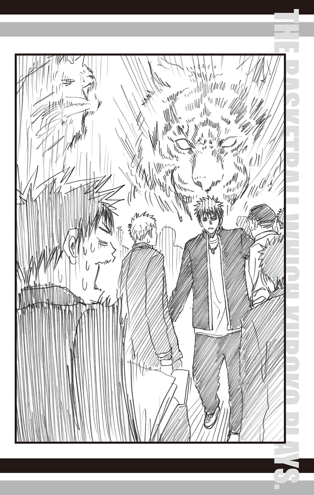
小金井は目の前に立った男を見上げた。
長い足、がっしりとした体軀、広い肩。赤みがかった髪の下からのぞく鋭い眼が、射貫くように小金井を見下ろしていた。
野生の獣に睨まれたような感覚に、小金井の背筋に本能的な恐怖が走る。
「ま、ままままた今度！」
勧誘しに来たにもかかわらず、小金井は裏返った声で叫ぶとくるりと背を向け、逃げだそうと地を蹴った――つもりだった。
「今度ってどういう意味だよ。いま、連れてけよ」
小金井が走りだすより早く、その男は小金井の首根っこをつかみ、持ち上げたのだ。
「え、ええええ!?」
「ほら、案内しろよ。連れてくから」
突然のことに呆気にとられる日向たちに助けを求める間もなく、新入生によって小金井は連れ去られた。
彼こそ、誠凛高校バスケ部の歴史を変えるであろう、力強い光――火神大我。
まさに金星を捕らえるという大役を果たした小金井であったが、どう見ても小金井が誘拐されたようにしか見えなかったと、のちに誰もが語った。
人知れず申込用紙を書き、彼はバスケ部のブースを離れた。
振り返ると、男のセンパイをひっさげて現れた大柄な一年生はいまだ書いている最中だ。
隣に並んだとき、ちらりと横を見たが、体つきからしてもかなりのバスケットマンと見た。ただ、どこか昏い眼差しが気になったが。
あの眼差しは、見たことがある。
かつての自分の相棒が、同じような目つきをしていた。
そして、おそらく自分も――。
深く沈みそうな意識を止めようと、彼は深呼吸をした。
過去にとらわれるために、誠凛へ来たわけではない。現在の彼らと向き合うために来たのだ。
やるべきことはたくさんある。
バスケから離れていた時間が長いので、勘を取り戻さなければならない。
影に徹するために。
まずは、自分の感情を秘める訓練が必要だ。
不用意に感情を揺らせば、ミスディレクションの妨げになる。さきほども、掲示板の前でつい感情的になり、人に気づかれてしまった。
彼は空を見上げた。
澄んだ青い空がどこまでも広がっている。
柔らかな四月の太陽が、彼の足下に影をつくる。
新しい光を求めて、彼――黒子テツヤは一歩を踏み出す。
はじまりの季節だ。
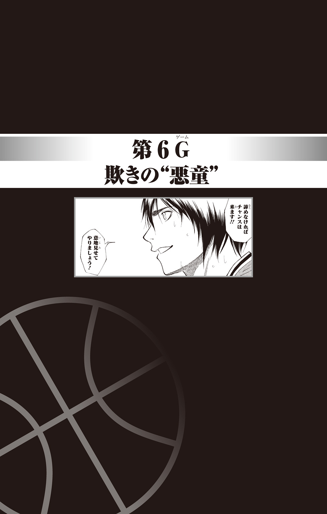
花宮真にまつわる噂はこうだ。
バスケがうまい。
（冷静で視野が広く、ＰＧとしての才覚がある）
頭がいい。
（入学直後の実力試験で学年トップの点数を取った）
礼儀正しく優しい。
（常に控えめで先輩や友人からの信頼も篤い）
花宮を知る人間は十人中十人が言う。
「花宮はいいヤツだよ」
花宮と同じバスケ部の人間も、十人中十人が......いや、一人だけ首をかしげる人物がいた。
今吉翔一。花宮のひとつ上の先輩で、バスケ部二年のこの男は口元に笑みを浮かべ、小首をかしげる。
花宮はホンマにええヤツなんか？
夕暮れ時、体育館にはコートを走る無数の音が鳴り響いていた。
磨かれた床をバッシュが蹴って走り、ボールがターンオーバーすれば、すかさず急ブレーキをかけるので、スキール音が鳴りやむ暇もない。
体育館全体を使ったフルコートではいま、試合形式のミニゲームが行われていた。
今吉が所属するバスケ部は、練習の締めくくりにミニゲームを行う。いま行われているのは二試合目で、一試合目に出た今吉は交代し、休憩に入ったところだ。
他のメンバーと同じように体育館の隅に座り、コート内を見つめる。二試合目は一年生と二年生の混合チームだ。この春に入部したばかりの一年生では、二年生の動きについていくのが精一杯なのがひと目でわかる。その中で、ひとりだけ機敏に動き回り、目を引く存在がいた。
花宮真だ。
いまも彼は敵チームの死角をつき、ボールをスティールすると、逡巡する素振りもなくノーマークになっている仲間へボールを回した。
直後、その仲間がシュートをうち、ゴール。
「ナイッシュー！」
今吉と同様に観戦していたチームメイトたちが声を揃えた。シュートを決めた人物もいいプレイだったが、その前にパスを回した花宮の動きはまさにファインプレイだ。観戦していたチームメイトたちも、自然と花宮の動きを称える。
「やっぱうまいな、花宮」
「パス回すのもうまいけど、自分でシュートもうてるし、すげぇよな」
「一年の中じゃ、あいつがダントツでうまいよ」
隣で話す同級生の会話に、「たしかに」と今吉も心の中で同意する。花宮のうまさは頭ひとつ、抜き出ている。
一年で一番どころか、おそらくこのバスケ部で五本の指に入る実力だ。
「花宮が試合に出れば、この前の交流戦も勝てたのにな......」
「おいっ、ばかっ！」
ぽつりと呟いた同級生の口を、別の同級生が慌てて塞ぐ。
失言したほうも気づいたらしく、聞かれたら一番まずい相手、現レギュラーの居場所を青い顔で探した。
現レギュラーの居場所はすぐに判明した。体育館の反対側から、ぎゃははははと大きな笑い声が聞こえたのだ。部活中だというのに、コーチに注意されることもなく我が物顔で笑えるのは、現レギュラーだけである。
失言してしまった同級生は胸を撫で下ろし、今度は物言いたそうな顔で今吉の顔をうかがってくる。
同級生の無言の懇願を察し、今吉はにぃと口の端をあげた。
「安心しぃ。ワシにはなーんも聞いてへん。特に、あのことはな」
否定しながらも暗に聞こえているという今吉の意地悪い笑みに、同級生は乾いた笑いを浮かべるしかない。
あのこと、とは先日行われた地域の交流戦のことである。この話題はバスケ部ではタブーとなっていた。
理由は簡単だ。今吉たちのバスケ部が、かつてないほど惨敗したせいである。
直接戦った相手チームが驚くほどの負けっぷりだった。そしてなにより交流戦の相手チームすべてを驚かせたのは、今吉たちのバスケ部が、去年までのレギュラーがひとりもいない新レギュラー体制になっていたことだった。
去年までのレギュラーは、全国区とまではいかなかったが地域では一番恐れられた強さだった。そのメンバーが全員、控えにすら入っていなかったのだ。
すべては一か月前。この春から就任した新しいコーチの意向だった。
かつてインターハイ出場を経験した新コーチは、その輝かしい歴史（と本人自らが豪語したので、気の弱い顧問はそれを鵜吞みにした）を盾に、バスケ部を独断で変えた。
その最たるものが、レギュラーの総入れ替えである。空いた席には、彼の中学二年生になる息子とその取り巻きが据えられた。
意のままにバスケ部を牛耳るコーチにならい、コーチの息子と、その取り巻きたちはバスケ部を食い物にした。
基礎練習などほとんどせず、ちゃんと参加するのは試合形式のゲームだけ。遊び感覚の態度に耐えかねた上級生が注意すると、その上級生のほうが、強制的に退部させられた。
おかげで、いまとなっては誰も彼らを注意するものはいない。
そんな現レギュラーでは、試合に勝てないことは明白だった。
おりしも、もうすぐ全中の予選がはじまる。旧レギュラーの三年生のことを思うと、気が重くなるが、大好きなバスケができなくなる恐怖に、誰もが口をつぐんでいた。
それなのに、そのタブーにうっかり触れてしまったチームメイトは、話を変えようと必死に頭を働かせ、「えーとえーっと、そう、あれだ！」と手を打った。
「花宮ってさ、やっぱ良いヤツだよな！ 褒めても図に乗らないのが、アイツのすげーいいところだよ」
今度は同意しづらく、今吉は心の中で首をかしげる。
彼らが言うように、花宮はどんなにいいプレイをしても、威張ることはない。面と向かって褒められても、いつも照れたように「いや、オレなんかまだまだですよ」と、はにかむのだ。
その奥ゆかしさがまたチームメイトに好印象を与え、好感度をあげている。
おかげで最近聞く花宮の噂は、いい話ばかりだ。
だから、気になる。
「なんで花宮の悪口って聞かんのかな」
今吉が何気なく言うと、隣に座る同級生は一瞬ぽかんとしたのち、吹き出した。
「決まってんじゃん！ そんな噂ないからだろ？ あいつに悪い噂をたてるヤツって、よっぽどひねくれてるヤツだけだって」
ワシはひねくれとるけど、あいつの悪口言おうとは思わんで、と今吉は思うが、論点はそこではないので、黙っておく。
「でも、変と思わん？ いい噂しか、聞かないなんて」
「そうか？ いいヤツだって証明だろ」
チームメイトはなにもおかしいことなどないと、笑った。
そのときだ。
コートから人がぶつかる鈍い音が聞こえた。続いて、悲鳴。
今吉がコートを見遣ると、ゴール下に誰かが折り重なって倒れていた。
上に倒れていた人物がよろよろと体を起こし、はっとしたように自分の下敷きになった人物に声をかけた。
「先輩、しっかりしてください！」
その声は花宮のものだった。
倒れた人物から返事はなかった。
代わりに、怒鳴るような声でコーチが息子の名前を呼び、花宮を突き飛ばして倒れた人影の傍らにしゃがんだ。おかげで、誰が怪我をしたのかがわかる。
「救急車を呼べ！ 保健の先生もだ！」
顧問の声が素早く飛び、今吉たちは慌てて体育館から飛び出した。
不幸な事故だった。
ゴール下でシュートを決めようとした花宮がバランスを崩し、下にいたコーチの息子を巻きこんで倒れこんでしまったのだ。これぐらいはよくあることだが、不幸なことに、落下した花宮の肘がコーチの息子の顔に埋まるように当たり、彼はその衝撃で脳震盪を起こして気を失った。
コーチの息子は病院に運ばれる途中で意識を取り戻したが、しばらくは大事をとってクラブを休むこととなった。
先輩に怪我を負わせた花宮は酷く落ちこんだ。
激怒したコーチが花宮を退部させると息巻き、花宮自身も責任を取ると言いだしたが、チームメイトがこぞって反対し、いつもは口をつぐむ顧問までもがそれに賛同したおかげで、コーチは渋々ながら花宮の退部を撤回した。
事故から一週間後。
精密検査の結果、怪我をした二年生は脳に異常はなかったが、アキレス腱断裂のため全治三か月と診断された。
それを告げられたのは、練習後の反省会のときのことだった。
病院につきそっているためコーチの姿はなく、代わりに顧問が淡々と説明すると、部員たちはざわついた。怪我をした二年生のためではない。残された花宮を気遣っての声だった。誰もが花宮が落ちこむのではないかと、心配と同情的な視線を彼に向けた。
花宮は俯き、長めの髪が彼の表情を覆い隠している。
「花宮、おまえのせいじゃない。気に病んじゃだめだぞ」
顧問が優しく声をかけても、花宮は俯いたまま「はい......」と掠れた声で返事をするのみだった。
反省会後、花宮が一人で残って練習をしたいと言いだしても、疑問に思う者はいなかった。
むしろそれで気が晴れるなら、と顧問も特別に許可を出したぐらいだ。
がらんとした体育館に、花宮はひとりで立った。
ボールを二、三度弾ませ、両手でキャッチする。
顔をあげた。
――すべて計画どおりだ。
笑いだしたいのは我慢できたが、口元だけはどうしても緩んだ。
「ええ顔してるやん」
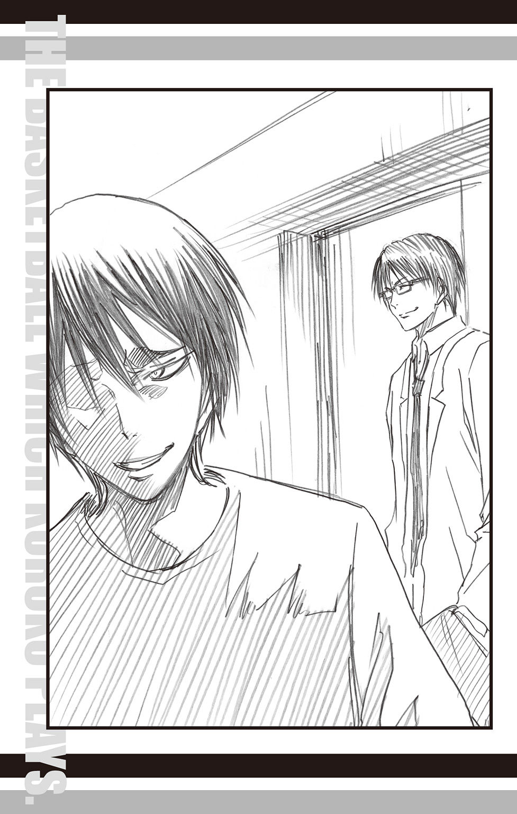
突然の声に、花宮は肩を揺らし、声のしたほうを見る。
いつのまにか、制服姿の今吉が立っていた。
眼鏡の奥で細い瞳が楽しげに笑っている。
「いつも、そういう顔してたら、ええのに」
「......なんのことですか？」
花宮は少し困ったような笑顔を向けた。
「オレはいつもこういう顔ですけど」
「ちゃうちゃう。さっきの顔や。素で見せたほう」
今吉がゆっくりと花宮へ近づく。
「自分、ごっつい悪い顔してたで」
「すみません、先輩のおっしゃってる意味がわからないのですが」
「腹の探りあいはやめようや。疲れるだけやで？」
二歩分の距離をとって、ふたりは笑顔のまま、向きあった。
先に匙を投げたのは、今吉だった。
「まあ、ええわ。すぐに本性見せてくれるとは思てなかったし」
諦めたかのようにため息をつき、「うまい小細工やと思うわ」と穏やかに言った。
「きっちりかぶった、いい子ちゃんの仮面のおかげで、誰もおまえがわざと怪我させたなんて思うてへん。むしろ自分に同情を寄せさせて......。用意周到すぎるわ、ほんま」
くすりと花宮は笑った。とても楽しそうに、目を細める。
「酷いな先輩。それじゃ、まるでオレが非道みたいですよ」
「否定するんか」
「もちろん。だって、オレがそんな計画したという証拠はありませんよね？」
「証拠なんて別にいらんわ。おまえの小細工を誰かに告げ口したいとは思うてへん」
「では、探偵気分でも味わいに？」
「まさか。ここに来たのも単に忠告するためだけや」
「忠告？」
花宮が聞き返すと、今吉は「せや」と――笑った。
瞬間、花宮の背筋に冷たいものが走った。それが悪寒だと気づく前に、今吉が口を開いた。
「今回はワシしか気づかんかったからええけど、バレたらつまらんで。これ以上、おイタはせんとき」
穏やかに話しながら、今吉は眼鏡をすっとあげる。眼鏡の奥の細めた目は笑っていなかった。
花宮は口の中が急速に乾くのを感じた。
直感的に理解する。本人が言うとおり、目の前の人物と腹の探りあいをするのは、酷く骨が折れそうだ。
「ちっ！」
花宮は盛大に舌打ちをし、持っていたボールを力一杯床にたたきつける。
あらためて今吉を見つめる花宮の顔からは、優等生の穏やかな仮面はそぎ落ち、計算高く陰湿な顔が現れていた。
「なんやもうお芝居は終わりか？」
「これ以上やっても、疲れるだけだからな」
苛ついて腕を組む花宮に今吉は満足げに頷く。
「自分、その顔のほうが何倍もイキイキしとるで」
「うっせーよ！ バァカ！」
悪態をつく花宮に今吉はくくくと喉の奥で笑うと、くるりと背を向けた。
「ま、ぼちぼち楽しませたるから、待っとき」
歩き去るその背に花宮が声をかける。
「おい」
「ん？」
今吉が足を止め、首だけ振り返る。「なんや」
「いつから、オレが怪しいと思ってたんだ？」
入学前はそれなりの強豪校と聞いていたのに、いざ入部してみればバスケ部はクズ同然と化していた。嫌気がさした花宮は、現状にはさっさと見切りをつけて自分が楽しめるチームに変えるべく計画を立てた。念入りに根回しをしたつもりだったのに、こんなにすぐにバレるのはしゃくに障る。いったいどこに綻びがあったのか、知っておきたかった。
むっとして睨む花宮の前で、今吉は「せやなぁ......」と記憶を辿るように顎に手をあてた。
「最初は気にしておらんかったけど、ええ噂ばっかりなんは、変やなぁとは思ったわ。まあこれは、ワシの信念に反したから気になったせいかもしれんけどな」
「なんだよ、あんたの信念て？」
素直に尋ねる花宮に、今吉は「かわいいところあるやん」と思いつつ、教えてやった。
「世の中に善人なんておらん」
数週間後。
バスケ部では様々な出来事が立て続けに起きた。
まず、コーチが突然退任したのだ。「一身上の理由」とだけ告げて、コーチは逃げるように引っ越してしまった。もちろん息子も連れてである。慌てたのは、その他の現レギュラーだ。いままで好き勝手やってきた自覚があったぶん、バスケ部に彼らの居場所は既になく、ひとり、またひとりと部を去った。
やがて、どこからかバスケ経験のある専属のコーチが呼ばれ、就任した。
そのコーチは学年を問わず実力に応じてレギュラーを選び直し、さらに三年生が引退するのを待たずに、二年生である今吉を主将に任命した。
嵐のような出来事に、バスケ部員は翻弄され、戸惑った。
しかし新主将の今吉が、人を食ったような笑みのまま的確に指示を出しているうちに、誰もがその嵐に慣れ、新生バスケ部は数日で軌道に乗った。
全中の予選が間近に迫ったその日、マネージャーから新しく手渡されたユニフォームを見つめ、花宮は思った。
あんたが考えてたことって、これかよ。
一連の動きの裏に、今吉が嚙んでいるのは明白だ。嚙んでいるどころか、計画したのも彼だろう。なぜなら、今度やってきたコーチとは名ばかりで、実質しきっているのは今吉なのだから。
ウザイ独裁体制に嫌気がさしていたのは彼も同じだったというわけだ。
だからといって、コーチをすげ替えるとは。
顔をあげ、今吉をちらりと見遣る。
かの策士は新レギュラーがユニフォームを喜ぶ様を楽しげに見ている。
その目は、見守るというよりも動物園にある猿山の猿を楽しげに観察しているに近い。
今吉は花宮の視線に気づいたらしく、近づいてきた。
「なんや、ユニフォーム不満なんか？」
「......別に」
花宮はむすっとした顔で今吉を睨む。
たしかにこれからはおもしろくなりそうだ。
だが同時に、今吉の底知れなさも見せつけられ、おもしろくない。
「ちっ！ つまんねぇ！」
人目もはばからずに悪態をつく花宮に、チームメイトたちは目をぎょっと丸くし、その様子を今吉だけがニヤニヤと見つめる。
体育館の開け放たれたドアから、初夏の風が入りこみ、彼らを優しく撫でていく。
花宮真、十二歳。のちに「無冠の五将《悪童》」と呼ばれる彼の一際早いデビューは、こうして調えられた。
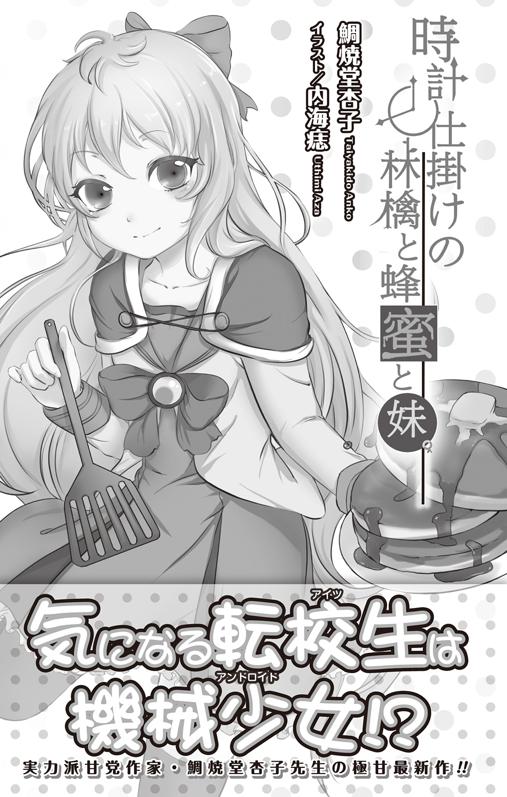
寡黙な転校生が、屋上でボクに告げたのは予想外も甚だしいことだった。
「善悪を左右する〝林檎〟!?」
「そう。わたしの体内にある〝心臓〟の別名。地球の〝善〟と〝悪〟を見極め、この〝林檎〟によって浄化へと促すのが、わたしの役目。――見る？」
「え？ 見るって......」
何を言われたのかわからず、聞き返すと、転校生は機械だらけの腕で器用にセーラー服のリボンをしゅるんとほどいた。
機械の指先が繊細な動きを見せて、胸元のホックを外す。
「ええ、ちょ、ちょちょちょ、何する気!?」
「あなたはわたしの話を信じていない。だから〝林檎〟を見せて信頼を得る」
「い、いいよ！ 見せなくて！ 信じる、信じるから！」
ボクは慌てて彼女に背中を向けた。冗談じゃない、さっき〝心臓〟って言ってたよね!? ということは胸元に......いやいやいやっ、これ以上は考えちゃダメだっ。
「なんだよ、見せてもらえばよかったのに、チェリーボーイ」
頭上からからかうような声が聞こえ、ボクはぎょっとして顔をあげた。
「出てくるなって言ったじゃないか！」
「しかたねぇだろ。オレはおまえに取り憑いているんだから。Understand?」
空中に胡座をかくように座り、そいつは憎らしいほど楽しげにボクを見下ろしている。太陽の光を浴びて、艶やかな黒髪が煌めく。ボクにだけ見えるそいつは、そこらへんのアイドルも裸足で逃げ出すようなイケメンだ。でもそれを証明することはできない。こいつは、ボクにしか見えないからだ。
「そもそも幽霊なのに、どうして昼間に出てくるんだよ！ おかしいだろ！」
「オレに言うな。でも、人生は surprise が多いほうが楽しいだろ？」
「キミの人生は終わってるじゃないか！」
「疑問。ひとりで何を叫ぶのか？」
背後から転校生の静かな声が聞こえ、ボクはびくっと肩を揺らした。完全に彼女の存在を忘れていた。この幽霊の声は取り憑かれているボクにしか聞こえない。
これじゃ、ひとり空に叫ぶボクは完全に人格破綻者か、おかしな青春野郎だ。
でも、この自称〝宇宙から来た進化する機械人形〟になんと説明すればいいんだ。
無理。説明できる気がしない。いや、そもそも説明責任はない。不本意だけど、ちょっと変な青春野郎で手をうってもらおう。
ボクはそう決めて、彼女に振り向いた。そのとき――。
「おい、ちょっと体を借りるぜ」
しまった、と思ったときは遅かった。頭上の幽霊がボクに断りもなく触れる。
背筋を氷の柱にぴたっとくっつけたような悪寒が走り抜けた。まずいまずいまずい！
「おい、機械女」
ボクの口が勝手に動く。ああ、またしても主導権を奪われた。
「それはわたしのことか」
転校生はじっとボクを見つめた。機械だらけだった腕がいつのまにか、皮膚でコーティングされている。とてもじゃないが、あの肌の下に機械があるとは思えない。
「疑問。あなたの脳波は睡眠状態にある。しかし、あなたはわたしを認識し、会話が成立している。どういうことか」
「簡単だ。いまはオレがこいつの体を借りている。そんなことはどうでもいい。てめーはこの世の〝善と悪〟を学習する手助けをしてほしいって言ってたな」
「肯定する」
「悪いが、そいつは別のヤツに頼め。こいつにはオレとの先約がある。オレが成仏できるように、この世で最高に甘い末期の〝蜜〟を飲ますってのがな」
「マツゴノミツ？」
「ああ。しかもとびっきりのいい女に口移しでしてもらう予定だ」
えぇ!? それ、初めて聞いたんだけど！ なにそれ！ 嫌だよ、ボク！
「いま、決めた。つーわけで、おまえの野暮用につきあう暇はない。Go home!」
ボクがボクの意志とは別に胸を張る。ああ、転校生が冷たい眼で見てる......。いや、機械なんだから、冷たい眼が普通なのか。もうなにがなんだかわからない。
でも、混乱状態はこれでは終わらなかった。
「やっと見つけましたわ、お兄様！」
声はまたも頭上から聞こえた。でも、さっきよりもずっと上。
ボクの体がボクの意志に反して上を向く。
そこで見たのは、日傘を差して、上空からふわふわと降りてくる少女の姿だった。
「わたくし、月から参りました輝夜です」
弾んだ声で自己紹介をする彼女の頭上では、兎の耳が揺れていた。
「黛さんですか？」
澄んだ声が、屋上で読書する彼の名前を呼んだ。
いいところを邪魔され、黛はむっとする。
ようやくヒロインらしきものが登場し、おもしろくなりそうだったというのに。
（誰だよ、邪魔するのは）
黛は内心ぼやき、邪魔者の顔だけ確認しようと顔をあげた。確認だけして、無視するつもりだった。それなのに――。
「どうも」
「......やけになれなれしいな」
気づくと、赤司征十郎と話していた。
後日、『時計仕掛けの林檎と蜂蜜と妹。』を読み終えた黛はつくづく思った。
屋上とは不思議な出会いの巣窟だ。

POSTSCRIPT
あとがき
黒子のバスケ小説版、なんと５作目です。
５という数字にはちょっとした思い入れがあります。
子供の頃やっていたある RPG のシリーズで、自分は５が特に好きでした。
個人的な見解ですが、その RPG は３でシステムが確立され、４でもう一歩革新し、５でその両方がバランスよく成熟されたイメージでした。
そしてこの小説版も５作目にしていよいよ、主人公が主人公たる能力を持つ前のただの人時代の話、悪童とずる賢い糸目の悪巧みの話、ナンパ大好きチンピラの喧嘩話などのエピソードの数々。
.........熟しすぎじゃねコレ。
熟しすぎて人によってはお腹壊すかもしれないぐらいのギリギリさじゃね。
平林さん、こんなギリギリのエピソードにまで挑んで頂きありがとうございます。
アニメなどでもお世話になっています。
本当に頭が上がりません。
小説版担当の佐藤さん、もうそろそろやめておけ。
お腹壊す人がでても知らんぞ。
最後になりましたが、この本を手にとってくれた読者の皆様、本当にありがとうございます。
小説はもちろん、漫画・アニメなど、これからも「黒子のバスケ」をよろしくお願いします。
藤巻忠俊
POSTSCRIPT
あとがき
Replace シリーズ第５弾は、「いつもと違う感じで」がテーマでした。
そして「どうにか５月発売に間に合わせて！」が最重要ミッションでした。
どちらもかなりハードルが高く、無事にクリアできたかどうかは、皆様にご判断して頂きたいと思っています。
（間に合うのかな...？ いまこの時点で、まだ原稿があがっていないのに...）
さて、今回もたくさんの方にお世話になりました。
ステキな設定を使わせてくださった高木登様、最後までお付き合い下さった JUMP j BOOKS 編集部の佐藤様をはじめ皆様、いつもお世話になりっぱなしの校正様、一番ご迷惑をおかけしている印刷所の皆様、英訳までお願いしてしまったジャンプ編集部の門司様、本当にありがとうございました!!
そして、嵐のようなスケジュールの中、イラストを多数描いて下さった藤巻先生!!
ピンナップ、ステキすぎます！
先生の描かれるおっ○いは、もうどこに出しても恥ずかしくないと思います！
最後に、読者の皆様。
５巻を『主人公たちと敵対したメンバーにスポットをあてた話』にするという提案を頂いたときはとても驚き、同時にその背景にある作品に対する皆様の熱い想いを再認識いたしました。
思いがけず、彼らのエピソードまで書かせて頂き、感謝の言葉しかありません。
ありがとうございました。
原作と一緒に、小説版のエピソードも楽しんで頂ければ幸いです。
それでは、またどこかで。
四月某日
平林佐和子
■初出
黒子のバスケ−Replace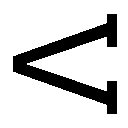− ふぞろいのエースたち 書き下ろし
著者紹介
藤巻忠俊 FUJIMAKI TADATOSHI
第44回ジャンプ十二傑新人漫画賞にて『黒子のバスケ』で十二傑賞受賞。
２００９年週刊少年ジャンプ第２号より同作の連載をスタートし好評を博す。
平林佐和子 HIRABAYASHI SAWAKO
アニメの脚本もてがける女性小説家。
著書に『黒子のバスケ-Replace-』シリーズ『SKET DANCE extra dance』シリーズなど。
ジャンプジェイブックスDIGITAL
黒子のバスケ―Replace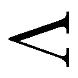― ふぞろいのエースたち
著者 藤巻忠俊／平林佐和子
© 2015 T.Fujimaki／S.Hirabayashi
２０１５年３月31日発行
この電子書籍は、ジャンプジェイブックス「黒子のバスケ―Replace― ふぞろいのエースたち」
２０１４年５月31日発行の第２刷を底本としています。
装丁 勝亦一巳
編集協力 佐藤裕介［STICK-OUT］
発行者 鈴木晴彦
発行所 株式会社 集英社
〒１０１－８０５０
東京都千代田区一ツ橋２丁目５番10号
０３－３２３０－６０８０（読者係）
制作所 株式会社デジタルディレクターズ
本作品の全部また一部を無断で複製、転載、改竄、インターネット上に掲載すること、および有償無償に関わらず、本データを第三者に譲渡することを禁じます。なお個人利用の目的であっても、コピーガードを解除しての複製は、法律で禁じられています。